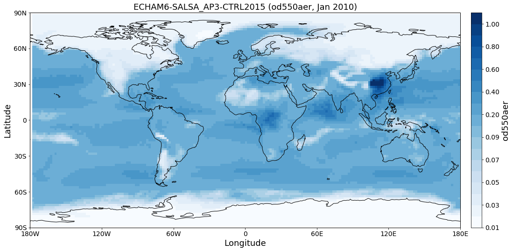
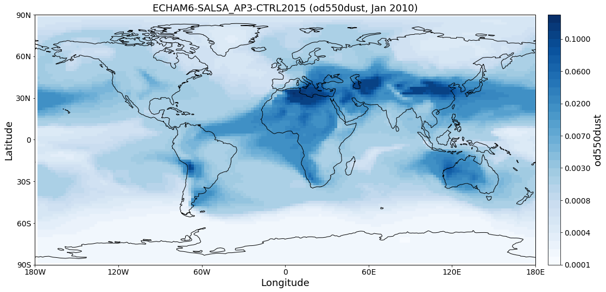
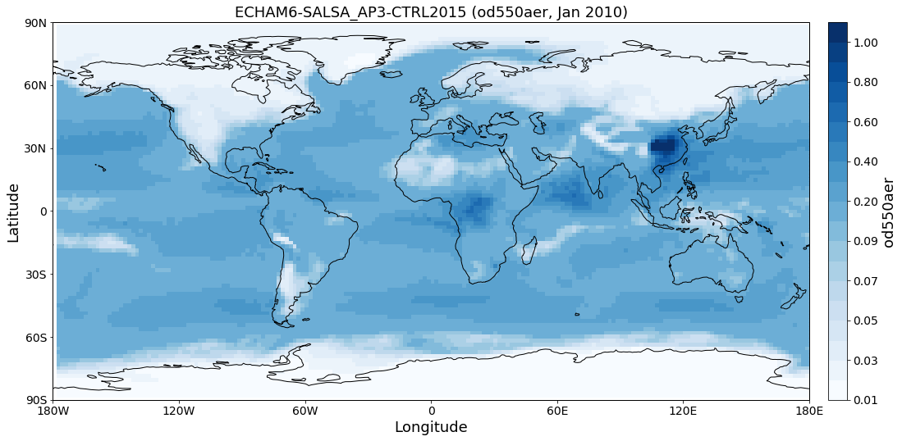
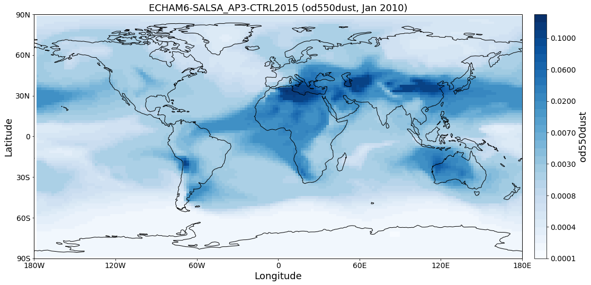

Tutorials (Jupyter Notebooks)¶
In this section you can find example tutorial notebooks for Pyaerocom.
Note
Under development
Getting started¶
This notebook is meant to give a quick introduction into pyaerocom based and into some of the relevant features and workflows when using pyaerocom.
It ends with a colocation of CAM53-Oslo model AODs both all-sky and clear-sky with Aeronet Sun V3 level 2 data.
Pyaerocom API flowchart (minimal)¶
The following flowchart illustrates the minimal workflow to create standard output in pyaerocom based on a user query (that typically comprises a model ID and observation ID as well as one (or more) variable(s) of interest (products indicated in red are not available yet, date of latest update: 4-10-2018).
from IPython.display import Image
flowchart = Image(filename=('../suppl/api_minimal_v0.png'))
flowchart

A user query typically comprises a model (+ experiment -> model run) and an observation network, which are supposed to be compared.
Note: the flowchart depicts a situation, where the data from the
observation network is ungridded, that is, the data is not available
in a gridded format such as NetCDF, but, for instance, in the form of
column seperated text files (as is the case for Aeronet data, which is
used as an example here and included in the test dataset). For
gridded observations (e.g. satellite data), the flowchart is
equivalent but with ReadGridded class and GriddedData for the
observation branch (and without caching).
This notebook illustrates and briefly discusses the individual aspects displayed in the flowchart.
import pyaerocom as pya
Check data directory¶
By default, pyaerocom assumes that the AEROCOM database can be accessed (cf. top of flowchart), that is, it initiates all data query paths relative to the database server path names.
pya.const.BASEDIR
'/lustre/storeA/project/aerocom/'
NOTE: Execution of the following lines will only work if you are connected to the AEROCOM data server or if you have access to the pyaerocom testdataset. The latter can be retrieved upon request (please contact jonasg@met.no).
Reading of and working with gridded model data (ReadGridded and GriddedData classes)¶
This section illustrates the reading of gridded data as well as some
features of the GriddedData class of pyaerocom. First, however, we
have to find a valid model ID for the reading (cf. flow chart).
Find model data¶
The database contains data from the CAM53-Oslo model, which is used in
the following. You can use the browse_database function of pyaerocom
to find model ID’s (which can be quite cryptic sometimes) using wildcard
pattern search.
pya.browse_database('CAM53*-Oslo*UNTUNED*')
Pyaerocom ReadGridded
---------------------
Model ID: CAM53-Oslo_7310_MG15CLM45_5feb2017IHK_53OSLO_PI_UNTUNED
Data directory: /lustre/storeA/project/aerocom/aerocom2/NorESM_SVN_TEST/CAM53-Oslo_7310_MG15CLM45_5feb2017IHK_53OSLO_PI_UNTUNED/renamed
Available variables: ['abs440aer', 'abs440aercs', 'abs500aer', 'abs5503Daer', 'abs550aer', 'abs550bc', 'abs550dryaer', 'abs550dust', 'abs550oa', 'abs550so4', 'abs550ss', 'abs670aer', 'abs870aer', 'airmass', 'area', 'asy3Daer', 'bc5503Daer', 'cheaqpso4', 'chegpso4', 'chepso2', 'cl3D', 'clt', 'drybc', 'drydms', 'drydust', 'dryoa', 'dryso2', 'dryso4', 'dryss', 'ec5503Daer', 'ec550dryaer', 'emibc', 'emidms', 'emidust', 'emioa', 'emiso2', 'emiso4', 'emiss', 'hus', 'landf', 'loadbc', 'loaddms', 'loaddust', 'loadoa', 'loadso2', 'loadso4', 'loadss', 'mmraerh2o', 'mmrbc', 'mmrdu', 'mmroa', 'mmrso4', 'mmrss', 'od440aer', 'od440csaer', 'od550aer', 'od550aerh2o', 'od550bc', 'od550csaer', 'od550dust', 'od550lt1aer', 'od550lt1dust', 'od550oa', 'od550so4', 'od550ss', 'od670aer', 'od870aer', 'od870csaer', 'orog', 'precip', 'pressure', 'ps', 'rlds', 'rlus', 'rlut', 'rlutcs', 'rsds', 'rsdscs', 'rsdt', 'rsus', 'rsut', 'sconcbc', 'sconcdms', 'sconcdust', 'sconcoa', 'sconcso2', 'sconcso4', 'sconcss', 'temp', 'vmrdms', 'vmrso2', 'wetbc', 'wetdms', 'wetdust', 'wetoa', 'wetso2', 'wetso4', 'wetss']
Available years: [9999]
Available time resolutions ['monthly']
Pyaerocom ReadGridded
---------------------
Model ID: CAM53-Oslo_7310_MG15CLM45_5feb2017IHK_53OSLO_PD_UNTUNED
Data directory: /lustre/storeA/project/aerocom/aerocom2/NorESM_SVN_TEST/CAM53-Oslo_7310_MG15CLM45_5feb2017IHK_53OSLO_PD_UNTUNED/renamed
Available variables: ['abs440aer', 'abs440aercs', 'abs500aer', 'abs5503Daer', 'abs550aer', 'abs550aercs', 'abs550bc', 'abs550dryaer', 'abs550dust', 'abs550oa', 'abs550so4', 'abs550ss', 'abs670aer', 'abs870aer', 'airmass', 'ang4487aer', 'ang4487csaer', 'area', 'asy3Daer', 'bc5503Daer', 'cheaqpso4', 'chegpso4', 'chepso2', 'cl3D', 'clt', 'drybc', 'drydms', 'drydust', 'dryoa', 'dryso2', 'dryso4', 'dryss', 'ec5503Daer', 'ec550dryaer', 'emibc', 'emidms', 'emidust', 'emioa', 'emiso2', 'emiso4', 'emiss', 'hus', 'landf', 'loadbc', 'loaddms', 'loaddust', 'loadoa', 'loadso2', 'loadso4', 'loadss', 'mmraerh2o', 'mmrbc', 'mmrdu', 'mmroa', 'mmrso4', 'mmrss', 'od440aer', 'od440csaer', 'od550aer', 'od550aerh2o', 'od550bc', 'od550csaer', 'od550dust', 'od550lt1aer', 'od550lt1dust', 'od550oa', 'od550so4', 'od550ss', 'od670aer', 'od870aer', 'od870csaer', 'orog', 'precip', 'pressure', 'ps', 'rlds', 'rlus', 'rlut', 'rlutcs', 'rsds', 'rsdscs', 'rsdt', 'rsus', 'rsut', 'sconcbc', 'sconcdms', 'sconcdust', 'sconcoa', 'sconcso2', 'sconcso4', 'sconcss', 'temp', 'vmrdms', 'vmrso2', 'wetbc', 'wetdms', 'wetdust', 'wetoa', 'wetso2', 'wetso4', 'wetss']
Available years: [2004, 2005, 2006, 2007, 2008, 2009, 2010, 9999]
Available time resolutions ['monthly']
Read Aerosol optical depth at 550 nm¶
Import both clear-sky (cs in variable name) and all-sky data.
reader = pya.io.ReadGridded('CAM53-Oslo_7310_MG15CLM45_5feb2017IHK_53OSLO_PD_UNTUNED')
od550aer = reader.read_var('od550aer')
od550csaer = reader.read_var('od550csaer')
Both data objects are instances of class GriddedData which is based on the Cube class (iris library) and features very similar functionality and more.
Some of these features are introduced below.
Overview of what is in the data¶
Simply print the object.
print(od550aer)
pyaerocom.GriddedData: CAM53-Oslo_7310_MG15CLM45_5feb2017IHK_53OSLO_PD_UNTUNED
Grid data: Aerosol optical depth at 500nm / (1) (time: 84; latitude: 192; longitude: 288)
Dimension coordinates:
time x - -
latitude - x -
longitude - - x
Attributes:
Conventions: CF-1.0
NCO: 4.3.7
Version: $Name$
case: 53OSLO_PD_UNTUNED
history: Thu Feb 9 11:05:21 2017: ncatted -O -a units,od550aer,o,c,1 /projects/NS2345K/CAM-Oslo/DO_AEROCOM/CAM53-Oslo_7310_MG15CLM45_5feb2017IHK_53OSLO_PD_UNTUNED/renamed/aerocom3_CAM53-Oslo_7310_MG15CLM45_5feb2017IHK_53OSLO_PD_UNTUNED_od550aer_Column_2004_monthly.nc
Thu...
host: hexagon-2
initial_file: /work/shared/noresm/inputdata/atm/cam/inic/fv/cami-mam3_0000-01-01_0.9...
logname: ihkarset
nco_openmp_thread_number: 1
revision_Id: $Id$
source: CAM
title: UNSET
topography_file: /work/shared/noresm/inputdata/noresm-only/inputForNudging/ERA_f09f09_3...
Cell methods:
mean: time
print(od550csaer)
pyaerocom.GriddedData: CAM53-Oslo_7310_MG15CLM45_5feb2017IHK_53OSLO_PD_UNTUNED
Grid data: Clear air Aerosol optical depth at 550nm / (1) (time: 84; latitude: 192; longitude: 288)
Dimension coordinates:
time x - -
latitude - x -
longitude - - x
Attributes:
Conventions: CF-1.0
NCO: 4.3.7
Version: $Name$
case: 53OSLO_PD_UNTUNED
history: Thu Feb 9 11:05:16 2017: ncatted -O -a units,od550csaer,o,c,1 /projects/NS2345K/CAM-Oslo/DO_AEROCOM/CAM53-Oslo_7310_MG15CLM45_5feb2017IHK_53OSLO_PD_UNTUNED/renamed/aerocom3_CAM53-Oslo_7310_MG15CLM45_5feb2017IHK_53OSLO_PD_UNTUNED_od550csaer_Column_2004_monthly.nc
Thu...
host: hexagon-2
initial_file: /work/shared/noresm/inputdata/atm/cam/inic/fv/cami-mam3_0000-01-01_0.9...
logname: ihkarset
nco_openmp_thread_number: 1
revision_Id: $Id$
source: CAM
title: UNSET
topography_file: /work/shared/noresm/inputdata/noresm-only/inputForNudging/ERA_f09f09_3...
Cell methods:
mean: time
Access time stamps¶
Time stamps are represented as numerical values with respect to a
reference date and frequency, according to the CF conventions. They can
be accessed via the time attribute of the data class.
od550aer.time
DimCoord(array([ 0., 31., 60., 91., 121., 152., 182., 213., 244.,
274., 305., 335., 366., 397., 425., 456., 486., 517.,
547., 578., 609., 639., 670., 700., 731., 762., 790.,
821., 851., 882., 912., 943., 974., 1004., 1035., 1065.,
1096., 1127., 1155., 1186., 1216., 1247., 1277., 1308., 1339.,
1369., 1400., 1430., 1461., 1492., 1521., 1552., 1582., 1613.,
1643., 1674., 1705., 1735., 1766., 1796., 1827., 1858., 1886.,
1917., 1947., 1978., 2008., 2039., 2070., 2100., 2131., 2161.,
2192., 2223., 2251., 2282., 2312., 2343., 2373., 2404., 2435.,
2465., 2496., 2526.]), standard_name='time', units=Unit('days since 2004-01-01 00:00:00', calendar='standard'))
You may also want the time-stamps in the form of actual datetime-like
objects. These can be computed using the time_stamps() method:
od550aer.time_stamps()
array(['2004-01-01T00:00:00.000000', '2004-02-01T00:00:00.000000',
'2004-03-01T00:00:00.000000', '2004-04-01T00:00:00.000000',
'2004-05-01T00:00:00.000000', '2004-06-01T00:00:00.000000',
'2004-07-01T00:00:00.000000', '2004-08-01T00:00:00.000000',
'2004-09-01T00:00:00.000000', '2004-10-01T00:00:00.000000',
'2004-11-01T00:00:00.000000', '2004-12-01T00:00:00.000000',
'2005-01-01T00:00:00.000000', '2005-02-01T00:00:00.000000',
'2005-03-01T00:00:00.000000', '2005-04-01T00:00:00.000000',
'2005-05-01T00:00:00.000000', '2005-06-01T00:00:00.000000',
'2005-07-01T00:00:00.000000', '2005-08-01T00:00:00.000000',
'2005-09-01T00:00:00.000000', '2005-10-01T00:00:00.000000',
'2005-11-01T00:00:00.000000', '2005-12-01T00:00:00.000000',
'2006-01-01T00:00:00.000000', '2006-02-01T00:00:00.000000',
'2006-03-01T00:00:00.000000', '2006-04-01T00:00:00.000000',
'2006-05-01T00:00:00.000000', '2006-06-01T00:00:00.000000',
'2006-07-01T00:00:00.000000', '2006-08-01T00:00:00.000000',
'2006-09-01T00:00:00.000000', '2006-10-01T00:00:00.000000',
'2006-11-01T00:00:00.000000', '2006-12-01T00:00:00.000000',
'2007-01-01T00:00:00.000000', '2007-02-01T00:00:00.000000',
'2007-03-01T00:00:00.000000', '2007-04-01T00:00:00.000000',
'2007-05-01T00:00:00.000000', '2007-06-01T00:00:00.000000',
'2007-07-01T00:00:00.000000', '2007-08-01T00:00:00.000000',
'2007-09-01T00:00:00.000000', '2007-10-01T00:00:00.000000',
'2007-11-01T00:00:00.000000', '2007-12-01T00:00:00.000000',
'2008-01-01T00:00:00.000000', '2008-02-01T00:00:00.000000',
'2008-03-01T00:00:00.000000', '2008-04-01T00:00:00.000000',
'2008-05-01T00:00:00.000000', '2008-06-01T00:00:00.000000',
'2008-07-01T00:00:00.000000', '2008-08-01T00:00:00.000000',
'2008-09-01T00:00:00.000000', '2008-10-01T00:00:00.000000',
'2008-11-01T00:00:00.000000', '2008-12-01T00:00:00.000000',
'2009-01-01T00:00:00.000000', '2009-02-01T00:00:00.000000',
'2009-03-01T00:00:00.000000', '2009-04-01T00:00:00.000000',
'2009-05-01T00:00:00.000000', '2009-06-01T00:00:00.000000',
'2009-07-01T00:00:00.000000', '2009-08-01T00:00:00.000000',
'2009-09-01T00:00:00.000000', '2009-10-01T00:00:00.000000',
'2009-11-01T00:00:00.000000', '2009-12-01T00:00:00.000000',
'2010-01-01T00:00:00.000000', '2010-02-01T00:00:00.000000',
'2010-03-01T00:00:00.000000', '2010-04-01T00:00:00.000000',
'2010-05-01T00:00:00.000000', '2010-06-01T00:00:00.000000',
'2010-07-01T00:00:00.000000', '2010-08-01T00:00:00.000000',
'2010-09-01T00:00:00.000000', '2010-10-01T00:00:00.000000',
'2010-11-01T00:00:00.000000', '2010-12-01T00:00:00.000000'],
dtype='datetime64[us]')
Plotting maps¶
Maps of individual time stamps can be plotted using the quickplot_map method.
ax1 = od550aer.quickplot_map('2009-3-15')
ax2 = od550csaer.quickplot_map('2009-3-15')
Filtering¶
Regional filtering can be performed using the Filter class (cf. flowchart above).
An overview of available default regions can be accessed via:
print(pya.region.get_all_default_region_ids())
['WORLD', 'EUROPE', 'ASIA', 'AUSTRALIA', 'CHINA', 'INDIA', 'NAFRICA', 'SAFRICA', 'SAMERICA', 'NAMERICA']
Now let’s go for north Africa. Create instance of Filter class:
f = pya.Filter('NAFRICA')
f
Filter([('_name', 'NAFRICA-wMOUNTAINS'),
('_region',
Region NAFRICA Region([('_name', 'NAFRICA'), ('lon_range', [-20, 50]), ('lat_range', [0, 40]), ('lon_range_plot', [-20, 50]), ('lat_range_plot', [0, 40]), ('lon_ticks', None), ('lat_ticks', None)])),
('lon_range', [-20, 50]),
('lat_range', [0, 40]),
('alt_range', None)])
… and apply to the two data objects (this can be done by calling the filter with the corresponding data class as input parameter):
od550aer_nafrica = f(od550aer)
od550csaer_nafrica = f(od550csaer)
Compare shapes:
od550aer_nafrica
pyaerocom.GriddedData
Grid data: <iris 'Cube' of Aerosol optical depth at 500nm / (1) (time: 84; latitude: 42; longitude: 57)>
od550aer
pyaerocom.GriddedData
Grid data: <iris 'Cube' of Aerosol optical depth at 500nm / (1) (time: 84; latitude: 192; longitude: 288)>
As you can see, the filtered object is reduced in the longitude and latitude dimension. Let’s plot the two new objects:
ax1 = od550aer_nafrica.quickplot_map('2009-3-15')
ax2 = od550csaer_nafrica.quickplot_map('2009-3-15')
Filtering of time¶
Filtering of time is not yet included in the Filter class but can be
easily performed from the GriddedData object directly. If you know
the indices of the time stamps you want to crop, you can simply use
numpy indexing syntax (remember that we have a 3D array containing time,
latitude and lonfgitude).
Let’s say we want to filter the year 2009.
Since the time dimension corresponds the first index in the 3D data (time, lat, lon), and since we know, that we have monthly data from 2008-2010 (see above), we may use
od550aer_nafrica_2009 = od550aer_nafrica[12:24]
od550aer_nafrica_2009.time_stamps()
array(['2005-01-01T00:00:00.000000', '2005-02-01T00:00:00.000000',
'2005-03-01T00:00:00.000000', '2005-04-01T00:00:00.000000',
'2005-05-01T00:00:00.000000', '2005-06-01T00:00:00.000000',
'2005-07-01T00:00:00.000000', '2005-08-01T00:00:00.000000',
'2005-09-01T00:00:00.000000', '2005-10-01T00:00:00.000000',
'2005-11-01T00:00:00.000000', '2005-12-01T00:00:00.000000'],
dtype='datetime64[us]')
in order to extract the year 2009.
However, this methodology might not always be handy (imagine you have a
10 year dataset of 3hourly sampled data and want to extract three
months in the 6th year …). In that case, you can perform the cropping
using the actual timestamps (for comparibility, let’s stick to 2009
here):
od550aer_nafrica_2009_alt = od550aer_nafrica.crop(time_range=('1-1-2009', '1-1-2010'))
od550aer_nafrica_2009.time_stamps()
array(['2005-01-01T00:00:00.000000', '2005-02-01T00:00:00.000000',
'2005-03-01T00:00:00.000000', '2005-04-01T00:00:00.000000',
'2005-05-01T00:00:00.000000', '2005-06-01T00:00:00.000000',
'2005-07-01T00:00:00.000000', '2005-08-01T00:00:00.000000',
'2005-09-01T00:00:00.000000', '2005-10-01T00:00:00.000000',
'2005-11-01T00:00:00.000000', '2005-12-01T00:00:00.000000'],
dtype='datetime64[us]')
Data aggregation¶
Let’s say we want to compute yearly means for each of the 3 years. In
this case we can simply call the downscale_time method:
od550aer_nafrica.downscale_time('yearly')
od550aer_nafrica.quickplot_map('2009')

Note: seasonal aggregation is not yet implemented in pyaerocom but will follow soon.
In the following section the reading of ungridded data is illustrated based on the example of AERONET version 3 (level 2) data. The test dataset contains a randomly picked subset of 100 Aeronet stations. Aeronet provides different products,
Reading of and working with ungridded data (ReadUngridded and UngriddedData classes)¶
Ungridded data in pyaerocom refers to data that is available in the form
of files per station and that is not sampled in a manner that it would
make sense to translate into a rgular gridded format such as the
previously introduced GriddedData class.
Data from the AERONET network (that is introduced in the following), for instance, is provided in the form of column seperated text files per measurement station, where columns correspond to different variables and data rows to individual time stamps. Needless to say that the time stamps (or the covered periods) vary from station to station.
The basic workflow for reading of ungridded data, such as Aeronet data, is very similar to the reading of gridded data (comprising a reading class that handles a query and returns a data class, here UngriddedData (see also flow chart above).
Before we can continue with the data import, some things need to be said
related to the caching of UngriddedData objects.
Caching of UngriddedData¶
Reading of ungridded data is often rather time-consuming. Therefore,
pyaerocom uses a caching strategy that stores loaded instances of the
UngriddedData class as pickle files in a cache directory
(illustrated in the left hand side of the flowchart shown above). The
loaction of the cache directory can be accessed via:
pya.const.CACHEDIR
'/home/jonasg/pyaerocom/_cache/jonasg'
You may change this directory if required.
print('Caching is active? {}'.format(pya.const.CACHING))
Caching is active? True
Deactivate caching
pya.const.CACHING = False
Activate caching
pya.const.CACHING = True
Note: if caching is active, make sure you have enough disk quota or change location where the files are stored.
Read Aeronet Sun v3 level 2 data¶
As illustrated in the flowchart above, ungridded observation data can be
imported using the ReadUngridded class. The reading class requires
an ID for the observation network that is supposed to be read. Let’s
find the right ID for these data:
pya.browse_database('Aeronet*V3*Lev2*')
Dataset name: AeronetSunV3Lev2.daily
Data directory: /lustre/storeA/project/aerocom/aerocom1/AEROCOM_OBSDATA/AeronetSunV3Lev2.0.daily/renamed
Supported variables: ['od340aer', 'od440aer', 'od500aer', 'od870aer', 'ang4487aer', 'ang4487aer_calc', 'od550aer']
Last revision: 20180820
Reading failed for AeronetSunV3Lev2.AP. Error: OSError('Data directory /lustre/storeA/project/aerocom/aerocom1/AEROCOM_OBSDATA/AeronetSunV3Lev2.0.AP/renamed of observation network AeronetSunV3Lev2.AP does not exists',)
Dataset name: AeronetSDAV3Lev2.daily
Data directory: /lustre/storeA/project/aerocom/aerocom1/AEROCOM_OBSDATA/Aeronet.SDA.V3L2.0.daily/renamed
Supported variables: ['od500gt1aer', 'od500lt1aer', 'od500aer', 'ang4487aer', 'od550aer', 'od550gt1aer', 'od550lt1aer']
Last revision: 20180928
Reading failed for AeronetSDAV3Lev2.AP. Error: NetworkNotImplemented('No reading class available yet for dataset AeronetSDAV3Lev2.AP',)
Dataset name: AeronetInvV3Lev2.daily
Data directory: /lustre/storeA/project/aerocom/aerocom1/AEROCOM_OBSDATA/Aeronet.Inv.V3L2.0.daily/renamed
Supported variables: ['abs440aer', 'angabs4487aer', 'od440aer', 'ang4487aer', 'abs550aer', 'od550aer']
Last revision: 20180728
It found one match and the dataset ID is AeronetSunV3Lev2.daily. It also tells us what variables can be loaded via the interface.
Note: You can safely ignore all the warnings in the output. These are due to the fact that the testdata set does not contain all observation networks that are available in the AEROCOM database.
obs_reader = pya.io.ReadUngridded('AeronetSunV3Lev2.daily')
print(obs_reader)
Dataset name: AeronetSunV3Lev2.daily
Data directory: /lustre/storeA/project/aerocom/aerocom1/AEROCOM_OBSDATA/AeronetSunV3Lev2.0.daily/renamed
Supported variables: ['od340aer', 'od440aer', 'od500aer', 'od870aer', 'ang4487aer', 'ang4487aer_calc', 'od550aer']
Last revision: 20180820
Let’s read the data (you can read a single or multiple variables at the same time). For now, we only read the AOD at 550 nm:
aeronet_data = obs_reader.read(vars_to_retrieve='od550aer')
type(aeronet_data) #displays data type
pyaerocom.ungriddeddata.UngriddedData
As you can see, the data object is of type UngriddedData. Like the
GriddedData object, also the UngriddedData class has an
informative string representation (that can be printed):
print(aeronet_data)
Pyaerocom UngriddedData
-----------------------
Contains networks: ['AeronetSunV3Lev2.daily']
Contains variables: ['od550aer']
Contains instruments: ['sun_photometer']
Total no. of stations: 1165
Access of individual stations¶
aeronet_data.station_name
['AOE_Baotou',
'ARM_Ascension_Is',
'ARM_Barnstable_MA',
'ARM_Darwin',
'ARM_Gan_Island',
'ARM_Graciosa',
'ARM_Highlands_MA',
'ARM_HyytialaFinland',
'ARM_Manacapuru',
'ARM_McMurdo',
'ARM_Nainital',
'ARM_Oliktok_AK',
'ARM_WAIS',
'ATHENS-NOA',
'Abisko',
'Abracos_Hill',
'Abu_Al_Bukhoosh',
'Abu_Dhabi',
'Adelaide_Site_7',
'AgiaMarina_Xyliatou',
'Agoufou',
'Agri_School',
'Aguas_Emendadas',
'Aguascalientes',
'Ahi_De_Cara',
'Ahmedabad',
'Aire_Adour',
'Al_Ain',
'Al_Dhafra',
'Al_Khaznah',
'Al_Qlaa',
'Albergue_UGR',
'Alboran',
'Albuquerque',
'Alishan',
'Alta_Floresta',
'Amazon_ATTO_Tower',
'American_Samoa',
'Ames',
'Amsterdam_Island',
'Andenes',
'Andros_Island',
'Angiola',
'Anmyon',
'AntarcticaDomeC',
'Appalachian_State',
'Appledore_Island',
'Apra_Harbor',
'Aras_de_los_Olmos',
'Arcachon',
'Arica',
'Ariquiums',
'Arizona',
'Armilla',
'Ascension_Island',
'Asia1',
'Aubiere_LAMP',
'Autilla',
'Avignon',
'Azores',
'BMKG_GAW_PALU',
'BONDVILLE',
'BORDEAUX',
'BSRN_BAO_Boulder',
'Bac_Giang',
'Bac_Lieu',
'Bach_Long_Vy',
'BackGarden_GZ',
'Badajoz',
'Baengnyeong',
'Bahrain',
'Bakersfield',
'Balbina',
'Bambey-ISRA',
'Bamboo',
'Bandung',
'Baneasa',
'Banizoumbou',
'Barbados',
'Barbados_SALTRACE',
'Barcelona',
'Bareilly',
'Bari_University',
'Barnaul',
'Barrow',
'Baskin',
'Bayfordbury',
'Beijing-CAMS',
'Beijing',
'Beijing_RADI',
'Belsk',
'Belterra',
'Ben_McDhui',
'Ben_Salem',
'Berlin_FUB',
'Bermuda',
'Bethlehem',
'Bhola',
'Biarritz',
'Bidi_Bahn',
'Big_Meadows',
'Billerica',
'Birdsville',
'Birkenes',
'Black_Forest_AMF',
'Blida',
'Blyth_NOAH',
'Bodele',
'Bolzano',
'Bonanza',
'Bonanza_Creek',
'Bondoukoui',
'Bordj_Badji_Mokhtar',
'Bordman',
'Bose_Institute',
'Boulder',
'Boyd_County_MS',
'Bozeman',
'Bragansa',
'Brasilia',
'Bratts_Lake',
'Brisbane-Uni_of_QLD',
'Brno_Airport',
'Brookhaven',
'Brussels',
'Bucarest',
'Bucharest_Inoe',
'Buena_Vista',
'Buesum',
'Bujumbura',
'Bure_OPE',
'Burjassot',
'Burtonsville',
'Bushland',
'CAMPO_VERDE',
'CANDLE_LAKE',
'CARTEL',
'CART_SITE',
'CASLEO',
'CATUC_Bamenda',
'CBBT',
'CCNY',
'CEILAP-BA',
'CEILAP-Bariloche',
'CEILAP-Comodoro',
'CEILAP-Neuquen',
'CEILAP-RG',
'CEILAP-UTN',
'CLUJ_UBB',
'COVE',
'COVE_SEAPRISM',
'CRPSM_Malindi',
'CRYSTAL_FACE',
'CUIABA-MIRANDA',
'CUT-TEPAK',
'Cabauw',
'Cabo_Raso',
'Cabo_da_Roca',
'Caceres',
'Cagliari',
'Cairo_EMA',
'Cairo_EMA_2',
'Cairo_University',
'CalTech',
'Caldwell_Parish_HS',
'Calern_OCA',
'Calhau',
'Calipso_Bowers_Rd',
'Calipso_Brookview',
'Calipso_Carthage',
'Calipso_Church_H_Rd',
'Calipso_Church_Hill',
'Calipso_Crouse_Mill',
'Calipso_Dean_Rd',
'Calipso_Flat_Iron',
'Calipso_Harrison_Rd',
'Calipso_Hillsboro',
'Calipso_Hillsboro_E',
'Calipso_Hurlock',
'Calipso_Kennedyvill',
'Calipso_Kinchaloe',
'Calipso_Loudon_Rd',
'Calipso_Mardela_Spr',
'Calipso_Morgnec_Rd',
'Calipso_NUFerry_Rd',
'Calipso_Ninetown_Rd',
'Calipso_Ormand_MS',
'Calipso_Peckman_Frm',
'Calipso_Perryville',
'Calipso_Pine_Cove',
'Calipso_Price',
'Calipso_Princess_An',
'Calipso_Prt_Deposit',
'Calipso_Ridgely',
'Calipso_Sabine_Frst',
'Calipso_Sanders_ES',
'Calipso_Sterling_PO',
'Calipso_Strasburg',
'Calipso_Tuckahoe',
'Calipso_Vienna',
'Calipso_W_Mardela',
'Calipso_W_Strasburg',
'Calipso_Washtn_High',
'Calipso_West_Denton',
'Calipso_Westfield_H',
'Calipso_White_Marsh',
'Calipso_WillistonLk',
'Calipso_WofDenton',
'Calipso_Zion',
'Camaguey',
'Camborne_MO',
'Campo_Grande',
'Campo_Grande_SONDA',
'Canberra',
'Cap_d_En_Font',
'Cape_Romain',
'Cape_San_Juan',
'Capo_Verde',
'Carloforte',
'Carlsbad',
'Carpentras',
'CART_SITE',
'Cat_Spring',
'Cerro_Poyos',
'Chao_Jou',
'Chapada',
'Chapais',
'Chebogue_Point',
'Chen-Kung_Univ',
'Chequamegon',
'Chiang_Mai',
'Chiang_Mai_Met_Sta',
'Chiayi',
'Chiba_University',
'Chilbolton',
'China_Lake',
'Chinhae',
'Chulalongkorn',
'Churchill',
'City_GZ',
'Clermont_Ferrand',
'Coconut_Island',
'Cold_Lake',
'Coleambally',
'Columbia_SC',
'Concepcion',
'Corcoran',
'Cordoba-CETT',
'Cork_UCC',
'Coruna',
'Creteil',
'Crozet_Island',
'Cuiaba',
'DMN_Maine_Soroa',
'DRAGON_ABERD',
'DRAGON_ANNEA',
'DRAGON_ARNCC',
'DRAGON_ARNLS',
'DRAGON_Aldine',
'DRAGON_Aldino',
'DRAGON_Anmyeon',
'DRAGON_Arvin',
'DRAGON_Aurora_East',
'DRAGON_BATMR',
'DRAGON_BLDND',
'DRAGON_BLLRT',
'DRAGON_BLTCC',
'DRAGON_BLTIM',
'DRAGON_BLTNR',
'DRAGON_BOWEM',
'DRAGON_BTMDL',
'DRAGON_Bainbridge',
'DRAGON_Bakersfield',
'DRAGON_BelAir',
'DRAGON_Beltsville',
'DRAGON_Bokjeong',
'DRAGON_Boulder',
'DRAGON_CHASE',
'DRAGON_CLLGP',
'DRAGON_CLRST',
'DRAGON_CPSDN',
'DRAGON_CTNVL',
'DRAGON_Channel_View',
'DRAGON_Chatfield_Pk',
'DRAGON_Clinton',
'DRAGON_Clovis',
'DRAGON_Conroe',
'DRAGON_Corcoran',
'DRAGON_Deer_Park',
'DRAGON_DenverLaCasa',
'DRAGON_Drummond',
'DRAGON_EDCMS',
'DRAGON_ELLCT',
'DRAGON_EaglePoint',
'DRAGON_Edgewood',
'DRAGON_Essex',
'DRAGON_FLLST',
'DRAGON_FairHill',
'DRAGON_Fort_Collins',
'DRAGON_Fukue',
'DRAGON_Fukue_2',
'DRAGON_Fukue_3',
'DRAGON_Fukuoka',
'DRAGON_Galveston',
'DRAGON_Galveston_DP',
'DRAGON_GangneungWNU',
'DRAGON_Garland',
'DRAGON_Guwol',
'DRAGON_Gwangju_GIST',
'DRAGON_Hanford',
'DRAGON_Hankuk_UFS',
'DRAGON_Henties_1',
'DRAGON_Henties_2',
'DRAGON_Henties_3',
'DRAGON_Henties_4',
'DRAGON_Henties_5',
'DRAGON_Henties_6',
'DRAGON_Huron',
'DRAGON_Jalan_ChainF',
'DRAGON_KampungBharu',
'DRAGON_KentIsland',
'DRAGON_Kobe',
'DRAGON_Kohriyama',
'DRAGON_Kongju_NU',
'DRAGON_Konkuk_Univ',
'DRAGON_Korea_Univ',
'DRAGON_Kunsan_NU',
'DRAGON_Kyoto',
'DRAGON_Kyungil_Univ',
'DRAGON_LAREL',
'DRAGON_LAUMD',
'DRAGON_MNKTN',
'DRAGON_Madera_City',
'DRAGON_ManvelCroix',
'DRAGON_Matsue',
'DRAGON_Mokpo_NU',
'DRAGON_Mt_Ikoma',
'DRAGON_Mt_Rokko',
'DRAGON_NIER',
'DRAGON_NREL-Golden',
'DRAGON_NW_Harris_CO',
'DRAGON_Nara',
'DRAGON_Nishiharima',
'DRAGON_Niwot_Ridge',
'DRAGON_OLNES',
'DRAGON_ONNGS',
'DRAGON_Osaka-North',
'DRAGON_Osaka-South',
'DRAGON_Osaka_Center',
'DRAGON_PATUX',
'DRAGON_Padonia',
'DRAGON_Pandan_Resrv',
'DRAGON_Parlier',
'DRAGON_Pasadena',
'DRAGON_PayaTerubong',
'DRAGON_Permatang_DL',
'DRAGON_PineyOrchard',
'DRAGON_Platteville',
'DRAGON_Pondok_Upeh',
'DRAGON_Porterville',
'DRAGON_Pusan_NU',
'DRAGON_Pylesville',
'DRAGON_RCKMD',
'DRAGON_Rocky_Flats',
'DRAGON_SHADY',
'DRAGON_SPBRK',
'DRAGON_Sanggye',
'DRAGON_SeabrookPark',
'DRAGON_Shafter',
'DRAGON_Sinjeong',
'DRAGON_Smith_Point',
'DRAGON_Soha',
'DRAGON_St_Johns_Is',
'DRAGON_TKMPR',
'DRAGON_Temasek_Poly',
'DRAGON_Tranquility',
'DRAGON_Tsukuba',
'DRAGON_UH_Sugarland',
'DRAGON_UH_W_Liberty',
'DRAGON_UMRLB',
'DRAGON_UiTM',
'DRAGON_Visalia',
'DRAGON_WSTFD',
'DRAGON_Welch',
'DRAGON_Weld_Co_Twr',
'DRAGON_West_Houston',
'DRAGON_WileyFord',
'DRAGON_Worton',
'DRAGON_Yishun_ITE',
'Dahkla',
'Dakar',
'Dalanzadgad',
'Dalma',
'Darwin',
'Davos',
'Dayton',
'Dead_Sea',
'Denver_LaCasa',
'Dhabi',
'Dhadnah',
'Dhaka_University',
'DigitalGlobe_Cal',
'Dilar',
'Djougou',
'Doi_Ang_Khang',
'Dolly_Sods',
'Donetsk',
'Dongsha_Island',
'Douliu',
'Dry_Tortugas',
'Dunedin',
'Dunhuang',
'Dunhuang_LZU',
'Dunkerque',
'Durban_UKZN',
'Dushanbe',
'EOPACE1',
'EOPACE2',
'EPA-NCU',
'EPA-Res_Triangle_Pk',
'ETNA',
'EVK2-CNR',
'EastMalling_MO',
'Easton-MDE',
'Easton_Airport',
'Edinburgh',
'Eforie',
'Egbert',
'Egbert_X',
'Eilat',
'El_Arenosillo',
'El_Farafra',
'El_Nido_Airport',
'El_Segundo',
'Elandsfontein',
'Ellington_Field',
'Epanomi',
'Ersa',
'Etosha_Pan',
'Evora',
'Exeter_MO',
'FLIN_FLON',
'FORTH_CRETE',
'FZJ-JOYCE',
'Farmington_RSVP',
'Finokalia-FKL',
'Fontainebleau',
'Fort_McKay',
'Fort_McMurray',
'Fowlers_Gap',
'Frenchman_Flat',
'Fresno',
'Fresno_2',
'Fresno_X',
'Frioul',
'Fuguei_Cape',
'Fukue',
'Fukuoka',
'GISS',
'GORDO_rest',
'GOT_Seaprism',
'GSFC',
'Gageocho_Station',
'Gainesville_Airport',
'Gaithersburg',
'Galata_Platform',
'Gandhi_College',
'Gangneung_WNU',
'Georgia_Tech',
'Glasgow_MO',
'Gloria',
'Gobabeb',
'Goldstone',
'Gorongosa',
'Gosan_SNU',
'Gotland',
'Gozo',
'Graciosa',
'Granada',
'Grand_Forks',
'Guadeloup',
'Gual_Pahari',
'Guam',
'Gustav_Dalen_Tower',
'Gwangju_GIST',
'HESS',
'HJAndrews',
'HOPE-Hambach',
'HOPE-Inselhombroich',
'HOPE-Krauthausen',
'HOPE-Melpitz',
'HOPE-RWTH-Aachen',
'Hada_El-Sham',
'Hagerstown',
'Halifax',
'Hamburg',
'Hamim',
'Hampton_Roads',
'Hampton_University',
'Hangzhou-ZFU',
'Hangzhou_City',
'Hankuk_UFS',
'Harvard_Forest',
'Hefei',
'Helgoland',
'Helsinki',
'Helsinki_Lighthouse',
'Heng-Chun',
'Henties_Bay',
'Hermosillo',
'Hetauda',
'HohenpeissenbergDWD',
'Hokkaido_University',
'Homburi',
'Hong_Kong_Hok_Tsui',
'Hong_Kong_PolyU',
'Hong_Kong_Sheung',
'Honolulu',
'Hornsund',
'Howland',
'Hua_Hin',
'Huancayo-IGP',
'Huelva',
'Hyytiala',
'IAOCA-KRSU',
'IASBS',
'ICIPE-Mbita',
'IER_Cinzana',
'IHOP-Homestead',
'IIT_KGP_EXT_Kolkata',
'IMAA_Potenza',
'IMC_Oristano',
'IMPROVE-MammothCave',
'IMS-METU-ERDEMLI',
'ISDGM_CNR',
'Iasi_LOASL',
'Ieodo_Station',
'Ilorin',
'Inhaca',
'Inner_Mongolia',
'Iqaluit',
'Irkutsk',
'Ispra',
'Issyk-Kul',
'Itajuba',
'Ittoqqortoormiit',
'Izana',
'Jabal_Hafeet',
'Jabiru',
'Jaipur',
'JamTown',
'Jambi',
'James_Res_Center',
'Jaru_Reserve',
'Ji_Parana',
'Ji_Parana_SE',
'Ji_Parana_UNIR',
'Jingtai',
'Joberg',
'Jomsom',
'JonesERC',
'Jug_Bay',
'KAUST_Campus',
'KIOST_Ansan',
'KITcube_Masada',
'KITcube_Save',
'KONZA_EDC',
'KORUS_Baeksa',
'KORUS_Daegwallyeong',
'KORUS_Iksan',
'KORUS_Kyungpook_NU',
'KORUS_Mokpo_NU',
'KORUS_NIER',
'KORUS_Olympic_Park',
'KORUS_Songchon',
'KORUS_Taehwa',
'KORUS_UNIST_Ulsan',
'Kaashidhoo',
'Kaiping',
'Kandahar',
'Kangerlussuaq',
'Kanpur',
'Kanzelhohe_Obs',
'Kaoma',
'Kapoho',
'Karachi',
'Karlsruhe',
'Karunya_University',
'Kathmandu-Bode',
'Kathmandu_Univ',
'Katibougou',
'Kejimkujik',
'Kellogg_LTER',
'Kelowna_UAS',
'Key_Biscayne',
'Key_Biscayne2',
'Kibale',
'Kirtland_AFB',
'Kitt-Peak_MP',
'Kobe',
'Koforidua_ANUC',
'Kolimbari',
'Konza',
'Korea_University',
'Krasnoyarsk',
'Kuching',
'Kuopio',
'Kuujjuarapik',
'Kuwait_Airport',
'Kuwait_Inst_Sci_Res',
'Kuwait_University',
'Kyiv-AO',
'Kyiv',
'Kyungil_University',
'LAMTO-STATION',
'LAQUILA_Coppito',
'LISCO',
'LMOS_Zion_Site',
'LOS_FIEROS_98',
'LSU',
'LW-SCAN',
'La_Crau',
'La_Jolla',
'La_Laguna',
'La_Parguera',
'La_Paz',
'Laegeren',
'Lahore',
'Lake_Argyle',
'Lake_Erie',
'Lake_Lefroy',
'Lamezia_Terme',
'Lampedusa',
'Lan_Yu_Island',
'Lanai',
'Langtang',
'Lannion',
'Lanzhou_City',
'Las_Galletas',
'Le_Fauga',
'Lecce_University',
'Leicester',
'Leipzig',
'Leland_HS',
'Lerwick_MO',
'Liangning',
'Lille',
'Lingshan_Mountain',
'Litang',
'Lochiel',
'Loftus_MO',
'London-UCL-UAO',
'Longyearbyen',
'Los_Alamos',
'Los_Fieros',
'Loskop_Dam',
'Luang_Namtha',
'Lubango',
'Lucinda',
'Lugansk',
'Lulin',
'Lumbini',
'Lunar_Lake',
'MAARCO',
'MALE',
'MCO-Hanimaadhoo',
'MD_Science_Center',
'MISR-JPL',
'MPI_Mainz',
'MVCO',
'Mace_Head',
'Madison',
'Madrid',
'Maeson',
'Maggie_Valley',
'Magurele_Inoe',
'Mainz',
'Makassar',
'Malaga',
'Mammoth_Lake',
'Manaus',
'Manaus_EMBRAPA',
'Manila_Observatory',
'Manus',
'Marambio',
'Marbella_San_Pedro',
'Maricopa',
'Marina',
'Marseille',
'Martova',
'Masdar_Institute',
'Maun_Tower',
'Mauna_Loa',
'McClellan_AFB',
'McMurdo',
'Medellin',
'Medenine-IRA',
'Melpitz',
'Merredin',
'Mesa_Lakes',
'Messina',
'MetObs_Lindenberg',
'Mexico_City',
'Mezaira',
'Miami',
'Midway_Island',
'Milyering',
'Mingo',
'Minqin',
'Minsk',
'Misamfu',
'Missoula',
'Mobile_C_050608',
'Mobile_C_060708',
'Mobile_DDun_051308W',
'Mobile_Kanpur_East',
'Mobile_Kanpur_SE',
'Mobile_Kanpur_South',
'Mobile_Kanpur_W2',
'Mobile_Kanpur_West',
'Mobile_N_050608',
'Mobile_N_051308W',
'Mobile_N_051508E',
'Mobile_N_052908W',
'Mobile_N_053108E',
'Mobile_N_060708',
'Mobile_N_061408W',
'Mobile_S_011509_ND',
'Mobile_S_050608',
'Mobile_S_051308W',
'Mobile_S_051508E',
'Mobile_S_052908W',
'Mobile_S_060708',
'Mobile_S_062308',
'Modena',
'Modesto',
'Moldova',
'Monclova',
'Mongu',
'Mongu_Inn',
'Mont_Joli',
'Monterey',
'Montesoro_Bastia',
'Montsec',
'Moscow_MSU_MO',
'Moss_Landing',
'Mount_Chacaltaya',
'Mount_Wilson',
'Mukdahan',
'Munich_Maisach',
'Munich_University',
'Murcia',
'Muscat',
'Mussafa',
'Muztagh_Ata',
'Mwinilunga',
'Myanmar',
'NAM_CO',
'NASA_Ames',
'NASA_KSC',
'NASA_LaRC',
'NCU_Taiwan',
'ND_Marbel_Univ',
'NEON-Boulder',
'NEON-CPER',
'NEON-Disney',
'NEON-HQ',
'NEON-SoaprootSaddle',
'NEON17-SJER',
'NEON_Bartlett',
'NEON_CLBJ',
'NEON_CVALLA',
'NEON_DEJU',
'NEON_GRSM',
'NEON_GUAN',
'NEON_GrandJunction',
'NEON_HEAL',
'NEON_Harvard',
'NEON_HarvardForest',
'NEON_HighParkFire',
'NEON_Ivanpah',
'NEON_KONZ',
'NEON_LENO',
'NEON_MLBS',
'NEON_MOAB',
'NEON_OAES',
'NEON_ONAQ',
'NEON_ORNL',
'NEON_OSBS',
'NEON_RMNP',
'NEON_SCBI',
'NEON_SERC',
'NEON_Sterling',
'NEON_TALL',
'NEON_TOOL',
'NEON_UKFS',
'NEON_UNDE',
'NEON_WOOD',
'NEW_YORK',
'NGHIA_DO',
'NSA_YJP_BOREAS',
'NUIST',
'NW_Chapel_Hill',
'Nainital',
'Nairobi',
'Namibe',
'Napoli_CeSMA',
'Nara',
'Narsarsuaq',
'Natal',
'Nauru',
'Ndola',
'Nes_Ziona',
'New_Delhi',
'New_Hampshire_Univ',
'NhaTrang',
'Niabrara',
'Niamey',
'Nicelli_Airport',
'Nicosia',
'Niigata',
'Nong_Khai',
'Norfolk_State_Univ',
'North_Pole',
'Noto',
'Noumea',
'Nouragues',
'Ny_Alesund',
'OBERNAI',
'OBS-SSA',
'OHP_OBSERVATOIRE',
'OK_St_Univ',
'OPAL',
'ORS_Hermosillo',
'ORS_UNAM_ISNP',
'OkefenokeeNWR',
'Okinawa',
'Omkoi',
'Oostende',
'Ordway-Swisher',
'Orizaba',
'Orlean_Bricy',
'Osaka-North',
'Osaka',
'Ouagadougou',
'Ouarzazate',
'Oujda',
'Oukaimeden',
'Owens_Lake',
'Oxford',
'Oyster',
'PEARL',
'PKU_PEK',
'PNNL',
'POLWET_Rzecin',
'PRINCE_ALBERT',
'Paardefontein',
'Paddockwood',
'Pafos',
'Pagosa_Springs',
'Palaiseau',
'Palangkaraya',
'Palencia',
'Palgrunden',
'Palma_de_Mallorca',
'Panama_BCI',
'Pantanal',
'Pantnagar',
'Paposo',
'Paracou',
'Paris',
'Park_Brasilia',
'Penn_State_Univ',
'Perth',
'Peterhof',
'Petrolina_SONDA',
'Philadelphia',
'Pic_du_midi',
'Pickle_Lake',
'Pietersburg',
'Pimai',
'Pitres',
'Pokhara',
'Pontianak',
'Poprad-Ganovce',
'Porquerolles',
'Portglenone_MO',
'Porto_Nacional',
'Porto_Velho',
'Porto_Velho_UNIR',
'Possession_Island',
'Potchefstroom',
'Potosi_Mine',
'Praia',
'Pretoria_CSIR-DPSS',
'Progress',
'Prospect_Hill',
'Puerto_Madryn',
'Puli',
'Pullman',
'Pune',
'Pusan_NU',
'Puspiptek',
'QOMS_CAS',
'Qiandaohu',
'Quarzazate',
'Quito_USFQ',
'REUNION_ST_DENIS',
'Raciborz',
'Ragged_Point',
'Railroad_Valley',
'Rame_Head',
'Ras_El_Ain',
'Realtor',
'Red_Bluff',
'Red_Mountain_Pass',
'Red_River_Delta',
'Resolute_Bay',
'Rexburg_Idaho',
'Rhyl_MO',
'Richland',
'Rimrock',
'Rio_Branco',
'Rio_Piedras',
'Rio_de_Janeiro_UFRJ',
'Rogers_Dry_Lake',
'Rome_ESA_ESRIN',
'Rome_La_Sapienza',
'Rome_Tor_Vergata',
'Roosevelt_Roads',
'Rossfeld',
'Rottnest_Island',
'SACOL',
'SAGRES',
'SANTA_CRUZ',
'SANTA_CRUZ_UTEPSA',
'SDU1',
'SDU2',
'SDU3',
'SDU4',
'SEARCH-Centreville',
'SEARCH-Centreville2',
'SEARCH-OLF',
'SEARCH-Yorkville',
'SEDE_BOKER',
'SEGC_Lope_Gabon',
'SERC',
'SKUKUZA_AEROPORT',
'SMART',
'SMART_POL',
'SMEX',
'SMHI',
'SP-EACH',
'SP_Bayboro',
'SSA_YJP_BOREAS',
'SS_OJP_BOREAS',
'Saada',
'Sable_Island',
'Saih_Salam',
'Saint_Mandrier',
'Salon_de_Provence',
'San_Giuliano',
'San_Nicolas',
'San_Nicolas_Vandal',
'San_Pietro_Capo',
'Sandia_NM_PSEL',
'Santa_Cruz_Tenerife',
'Santa_Monica_Colg',
'Santarem',
'Santiago',
'Santiago_Beauchef',
'Sao_Martinho_SONDA',
'Sao_Paulo',
'Saturn_Island',
'Senanga',
'Seoul_SNU',
'Sesheke',
'Sevastopol',
'Sevilleta',
'Seysses',
'Shagaya_Park',
'Shelton',
'Shirahama',
'Shouxian',
'Sigma_Space_Corp',
'Silpakorn_Univ',
'Simonstown_IMT',
'Singapore',
'Sinhgad',
'Sioux_Falls',
'Sioux_Falls_X',
'Sir_Bu_Nuair',
'Sirmione_Museo_GC',
'Skukuza',
'Smith_Island_CBF',
'Socheongcho',
'Sodankyla',
'Solar_Village',
'Solwezi',
'Son_La',
...]
Let’s say you are interested in the city of Leipzig, Germany.
station_data = aeronet_data['Leipzig']
type(station_data)
pyaerocom.stationdata.StationData
As you can see, the returned object is of type StationData, which is
one further data format that is not displayed in the flowchart above.
StationData may be useful for individual stations and is an extended
Python dictionary (if you are familiar with Python).
You may print it to see what is in there:
print(station_data)
Pyaerocom StationData
---------------------
instrument_name: sun_photometer
unit (<class 'pyaerocom._lowlevel_helpers.BrowseDict'>)
dataset_name: AeronetSunV3Lev2.daily
station_name: Leipzig
PI: Brent_Holben
stat_lat: nan
stat_lon: nan
stat_alt: nan
ts_type_src: daily
od550aer: 2001-05-20 12:00:00 0.190538
2001-05-21 12:00:00 0.165246
2001-05-22 12:00:00 0.117999
2001-05-23 12:00:00 0.067452
2001-05-24 12:00:00 0.077793
2001-05-30 12:00:00 0.119798
2001-06-03 12:00:00 0.121039
2001-06-06 12:00:00 0.312110
2001-06-07 12:00:00 0.192976
2001-06-09 12:00:00 0.558903
2001-06-11 12:00:00 0.206287
2001-06-12 12:00:00 0.294526
2001-06-13 12:00:00 0.333145
2001-06-14 12:00:00 0.346363
2001-06-15 12:00:00 0.332472
2001-06-16 12:00:00 0.220668
2001-06-17 12:00:00 0.103815
2001-06-19 12:00:00 0.146963
2001-06-20 12:00:00 0.149631
2001-06-21 12:00:00 0.322529
2001-06-23 12:00:00 0.266764
2001-06-24 12:00:00 0.148060
2001-06-25 12:00:00 0.468637
2001-06-26 12:00:00 0.168430
2001-06-27 12:00:00 0.224706
2001-06-28 12:00:00 0.837737
2001-06-29 12:00:00 0.472877
2001-06-30 12:00:00 0.421142
2001-07-01 12:00:00 0.285850
2001-07-02 12:00:00 0.149566
...
2017-09-20 12:00:00 0.098478
2017-09-21 12:00:00 0.285237
2017-09-22 12:00:00 0.296735
2017-09-23 12:00:00 0.350108
2017-09-27 12:00:00 0.336902
2017-09-28 12:00:00 0.253596
2017-09-29 12:00:00 0.172088
2017-09-30 12:00:00 0.173876
2017-10-12 12:00:00 0.076930
2017-10-14 12:00:00 0.067515
2017-10-15 12:00:00 0.039083
2017-10-16 12:00:00 0.174384
2017-10-17 12:00:00 0.087807
2017-10-18 12:00:00 0.178155
2017-10-19 12:00:00 0.116929
2017-10-22 12:00:00 0.065865
2017-10-29 12:00:00 0.124535
2017-10-30 12:00:00 0.041524
2017-11-02 12:00:00 0.143081
2017-11-03 12:00:00 0.158916
2017-11-06 12:00:00 0.110552
2017-11-17 12:00:00 0.081437
2017-11-24 12:00:00 0.055906
2017-11-26 12:00:00 0.101109
2017-11-27 12:00:00 0.073161
2017-11-29 12:00:00 0.063464
2017-11-30 12:00:00 0.135819
2017-12-01 12:00:00 0.160344
2017-12-03 12:00:00 0.109541
2017-12-07 12:00:00 0.087100
Length: 2713, dtype: float64
dtime (array, 2713 items)
[numpy.datetime64('2001-05-20T12:00:00')
numpy.datetime64('2001-05-21T12:00:00')
...
numpy.datetime64('2017-12-03T12:00:00')
numpy.datetime64('2017-12-07T12:00:00')]
Data coordinates
.................
latitude: 51.352500000000006
longitude: 12.435278
altitude: 125.0
As you can see, this station contains a time-series of the AOD at 550 nm. If you like, you can plot this time-series:
station_data.plot_variable('od550aer')
<matplotlib.axes._subplots.AxesSubplot at 0x7fe594678c18>
Colocation of model and obsdata¶
Now that we have different data objects loaded we can continue with colocation. In the following, both the all-sky and the clear-sky data from CAM53-Oslo will be colocated with the subset of Aeronet stations that we just loaded.
The colocation will be performed for the year of 2010 and two scatter plots will be created.
You have also the option to apply a certain filter when colocating using a valid filter name. Here, we use global data and exclude mountain sides.
col_all_sky_glob = pya.colocation.colocate_gridded_ungridded_2D(od550aer, aeronet_data,
ts_type='monthly',
start=2010,
filter_name='WORLD-noMOUNTAINS')
type(col_all_sky_glob)
Old name of function colocate_gridded_ungridded(still works)
Interpolating data of shape (12, 192, 288). This may take a while.
Successfully interpolated cube
pyaerocom.colocateddata.ColocatedData
Let’s do the same for the clear-sky data.
col_clear_sky_glob = pya.colocation.colocate_gridded_ungridded_2D(od550csaer, aeronet_data,
ts_type='monthly',
start=2010,
filter_name='WORLD-noMOUNTAINS')
type(col_clear_sky_glob)
Old name of function colocate_gridded_ungridded(still works)
Interpolating data of shape (12, 192, 288). This may take a while.
Successfully interpolated cube
pyaerocom.colocateddata.ColocatedData
ax1 = col_all_sky_glob.plot_scatter()
ax1.set_title('All sky (2010, monthly)')
Text(0.5,1,'All sky (2010, monthly)')
ax2 = col_clear_sky_glob.plot_scatter()
ax2.set_title('Clear sky (2010, monthly)')
Text(0.5,1,'Clear sky (2010, monthly)')
… or for EUROPE:
pya.colocation.colocate_gridded_ungridded_2D(od550aer, aeronet_data,
ts_type='monthly',
start=2010,
filter_name='EUROPE-noMOUNTAINS').plot_scatter()
Old name of function colocate_gridded_ungridded(still works)
Interpolating data of shape (12, 192, 288). This may take a while.
Successfully interpolated cube
<matplotlib.axes._subplots.AxesSubplot at 0x7fe594831f98>

AEROCOM default regions¶
This notebook introduces how pya handles information related to default regions (e.g. Europe, Asia, …) as used in the AEROCOM interface. All default regions are defined in the file regions.ini.
import pyaerocom as pya
print(pya.region.get_all_default_region_ids())
['WORLD', 'EUROPE', 'ASIA', 'AUSTRALIA', 'CHINA', 'INDIA', 'NAFRICA', 'SAFRICA', 'SAMERICA', 'NAMERICA']
Now load some default regions and print them.
europe = pya.Region("EUROPE")
asia = pya.Region("ASIA")
print(europe)
print()
print(asia)
pyaeorocom Region
Name: EUROPE
Longitude range: [-20, 70]
Latitude range: [30, 80]
Longitude range (plots): [-20, 70]
Latitude range (plots): [30, 80]
pyaeorocom Region
Name: ASIA
Longitude range: [40, 150]
Latitude range: [0, 60]
Longitude range (plots): [40, 150]
Latitude range (plots): [0, 60]
Load example data and apply region specific crop¶
In the following cell, we create an instance of the GriddedData
class (hich is introduced in more detail in a later tutorial), load some
test data (from the CAMS ECMWF OSUITE dataset), crop it and plot a map
of the results over Europe.
data = pya.GriddedData()
data._init_testdata_default()
crop = data.crop(region="EUROPE")
fig = crop.quickplot_map()
/home/jonasg/anaconda3/lib/python3.6/site-packages/iris/fileformats/_pyke_rules/compiled_krb/fc_rules_cf_fc.py:1808: UserWarning: Ignoring netCDF variable 'od550bc' invalid units '~'
warnings.warn(msg)
/home/jonasg/anaconda3/lib/python3.6/site-packages/iris/fileformats/_pyke_rules/compiled_krb/fc_rules_cf_fc.py:1808: UserWarning: Ignoring netCDF variable 'od550dust' invalid units '~'
warnings.warn(msg)
/home/jonasg/anaconda3/lib/python3.6/site-packages/iris/fileformats/_pyke_rules/compiled_krb/fc_rules_cf_fc.py:1808: UserWarning: Ignoring netCDF variable 'od550oa' invalid units '~'
warnings.warn(msg)
/home/jonasg/anaconda3/lib/python3.6/site-packages/iris/fileformats/_pyke_rules/compiled_krb/fc_rules_cf_fc.py:1808: UserWarning: Ignoring netCDF variable 'od550aer' invalid units '~'
warnings.warn(msg)
/home/jonasg/anaconda3/lib/python3.6/site-packages/iris/fileformats/_pyke_rules/compiled_krb/fc_rules_cf_fc.py:1808: UserWarning: Ignoring netCDF variable 'od550so4' invalid units '~'
warnings.warn(msg)

Reading model data: the ReadGridded class¶
This notebook introduces the ReadGridded class of pyaerocom, a flexible interface for importing model results from a single model, based on variable name (e.g. od550aer, od550bc), start / stop time stamps and temporal resolution (e.g. hourly, 3hourly, daily, monthly).
The class is part of the readgridded module of pyaerocom, as well as the class ReadGriddedMulti.
In the following cells, we create an instance of the the ReadGridded
class and use this object to find and import data files containing the
aerosol optical depth at 550 nm (od550aer) from the ECMWF CAMS
reanalysis model (ECMWF_CAMS_REAN) for the years 2003-2007 in daily
resolution. The files will be temporally merged and put into an instance
of the GriddedData class.
We start with creating a reading object, that will take care of finding
the model directory for us (based on the model ID) and all valid NetCDF
files on initialisation. Use the print commant to preview the string
representation of ReadGridded object, which provides useful
information about what is in there.
import pyaerocom as pya
pya.change_verbosity('critical')
read = pya.io.ReadGridded(name="ECMWF_CAMS_REAN",
start="1-1-2003",
stop="31-12-2007")
print(read)
Pyaerocom ReadGridded
---------------------
Model ID: ECMWF_CAMS_REAN
Data directory: /lustre/storeA/project/aerocom/aerocom-users-database/ECMWF/ECMWF_CAMS_REAN/renamed
Available variables: ['ang4487aer', 'od440aer', 'od550aer', 'od550bc', 'od550dust', 'od550oa', 'od550so4', 'od550ss', 'od865aer']
Available years: [2003, 2004, 2005, 2006, 2007, 2008]
Available time resolutions ['daily', 'monthly']
The output contains information about all variables that were found and all corresponding years. These information is extracted from the filenames, which have to follow the AEROCOM file naming conventions.
Please note that at this point, no data is actually imported but
only the paths are set that contain data for this model. In order to
read one variable, call the read_var function with a valid variable
name. You can check available variables using the vars attribute (or
by printing the string representation, as shown in the cell above).
print("Detected variables for model %s:\n %s" %(read.name, read.vars))
Detected variables for model ECMWF_CAMS_REAN:
['ang4487aer', 'od440aer', 'od550aer', 'od550bc', 'od550dust', 'od550oa', 'od550so4', 'od550ss', 'od865aer']
data = read.read_var(var_name="od550aer", ts_type="daily")
data
pyaerocom.GriddedData
Grid data: <iris 'Cube' of Aerosol optical depth at 550 nm / (1) (time: 1826; latitude: 161; longitude: 320)>
The returned data object is of type
GriddedData
class, which will be introduced in more detail later. This data object
is returned by the read_var method and can also be accessed from the
instance of the reading class using:
d = read.data["od550aer"]
d is data #?
True
We may also import other variables using either the above used method
read_var or the more general read method which can read single
or multiple variables on the run.
read.read(['od550bc', 'od550dust', 'od550oa', 'od550so4'])
(pyaerocom.GriddedData
Grid data: <iris 'Cube' of Aerosol optical depth at 550 nm / (1) (time: 1826; latitude: 161; longitude: 320)>,
pyaerocom.GriddedData
Grid data: <iris 'Cube' of Aerosol optical depth at 550 nm / (1) (time: 1826; latitude: 161; longitude: 320)>,
pyaerocom.GriddedData
Grid data: <iris 'Cube' of Aerosol optical depth at 550 nm / (1) (time: 1826; latitude: 161; longitude: 320)>,
pyaerocom.GriddedData
Grid data: <iris 'Cube' of Aerosol optical depth at 550 nm / (1) (time: 1826; latitude: 161; longitude: 320)>)
Now let’s double check if all variables have been imported.
print(read)
Pyaerocom ReadGridded
---------------------
Model ID: ECMWF_CAMS_REAN
Data directory: /lustre/storeA/project/aerocom/aerocom-users-database/ECMWF/ECMWF_CAMS_REAN/renamed
Available variables: ['ang4487aer', 'od440aer', 'od550aer', 'od550bc', 'od550dust', 'od550oa', 'od550so4', 'od550ss', 'od865aer']
Available years: [2003, 2004, 2005, 2006, 2007, 2008]
Available time resolutions ['daily', 'monthly']
Loaded GriddedData objects:
Pyaerocom GriddedData
---------------------
Variable: od550aer
Temporal resolution: daily
Start / Stop: 2003-01-01T00:00:00.000000 - 2007-12-31T23:59:59.999999
Pyaerocom GriddedData
---------------------
Variable: od550bc
Temporal resolution: daily
Start / Stop: 2003-01-01T00:00:00.000000 - 2007-12-31T23:59:59.999999
Pyaerocom GriddedData
---------------------
Variable: od550dust
Temporal resolution: daily
Start / Stop: 2003-01-01T00:00:00.000000 - 2007-12-31T23:59:59.999999
Pyaerocom GriddedData
---------------------
Variable: od550oa
Temporal resolution: daily
Start / Stop: 2003-01-01T00:00:00.000000 - 2007-12-31T23:59:59.999999
Pyaerocom GriddedData
---------------------
Variable: od550so4
Temporal resolution: daily
Start / Stop: 2003-01-01T00:00:00.000000 - 2007-12-31T23:59:59.999999
In the following we continue with the od550aer data object that was
loaded first and that was assigned the name data above.
print("\nThe data object is of type %s and contains %d time stamps" %(type(data), data.shape[0]))
The data object is of type <class 'pyaerocom.griddeddata.GriddedData'> and contains 1826 time stamps
The returned GriddedData object contains 1826 time stamps. Given that the defined period of 5 years includes one leap year, we should expect that we imported data for each day of the five years?
print(1826 == 5*365+1)
True
Remark on time definition¶
If you run this notebook with verbose=True in the reading object,
you will receive the output
Error message: AttributeError('Cube does not contain time dimension',) Invalid time axis in file ECMWF_CAMS_REAN.daily.od550aer.2007.nc. Attempting to correct.
several times when reading the data. This warning indicates, that the corresponding data in the netCDF files has some issue with the time dimension. Here, the time variable is not properly defined in the NetCDF file. Pyaerocom can correct for this on data import by
- First checking if the time dimension in the NetCDF file is correct according to CF convention (see here for details on the implementation and if a problem is detected, then …
- the time axis is redefined based on the year and time resolution (ts_type) that is encrypted in the filename. The latter requires that the file follows one of the pyaerocom file conventions.
A very brief introduction into the GriddedData class¶
Now as a final step, we briefly introduce some of the features of the
GriddedData class by computing and plotting a time series of the
global weighted average aerosol optical density as well as the same time
series at the coordinates in the city of Leipzig, Germany.
from pandas import Series
from scipy.ndimage import gaussian_filter1d
#compute global mean (area weighted)
glob_mean = data.area_weighted_mean()
#extract AODs at the position of Leipzig
lon_leipzig = 12.44
lat_leipzig = 51.35
data_leipzig = data.interpolate([("latitude", lat_leipzig),
("longitude", lon_leipzig)])
# create pandas Series for global average
s_glob = Series(glob_mean, index=data.time_stamps())
# create pandas Series for leipzig average (and smooth in time)
GAUSS_SIGMA = 3
s_leipzig = Series(gaussian_filter1d(data_leipzig.grid.data, GAUSS_SIGMA),
data_leipzig.time_stamps())
ax = s_leipzig.plot(label=r"City of Leipzig (smoothed $\sigma$=%d)" %GAUSS_SIGMA, figsize=(14,5))
s_glob.plot(label="Global trend", ax=ax)
ax.legend()
tit = ax.set_title("AOD @ 550nm")
/home/jonasg/anaconda3/lib/python3.6/site-packages/iris/analysis/cartography.py:377: UserWarning: Using DEFAULT_SPHERICAL_EARTH_RADIUS.
warnings.warn("Using DEFAULT_SPHERICAL_EARTH_RADIUS.")
Interpolating data of shape (1826, 161, 320). This may take a while.
Successfully interpolated cube

In the following section, the ReadGriddedMulti class is introduced,
which is largely based on the ReadGridded class and allows for
importing data from multiple models.
Reading data from multiple models: the ReadGriddedMulti class¶
The pyaerocom.ReadGriddedMulti class provides an interface to import
multiple variables for an arbitrary number of gridded datasets
(e.g. model data, level 2 satellite data) and within a specific time
interval. It makes large use of the ReadGridded class that provides
an interface for importing results from a single dataset.
import os
import pyaerocom as pya
pya.change_verbosity('critical')
Define two models (this list can contain as many models as you like)
models = ["AATSR_SU_v4.3", "CAM5.3-Oslo_CTRL2016"]
Again, if you are not sure what is the exact name of the dataset you are searching for, you may use wildcards to search for options. For instance, if you want to include results from the implementation of the sectional aerosol microphysics module (SALSA) in the ECHAM5-HAM aerosol-climate model, you may search if data exists …
try:
pya.search_data_dir_aerocom("*ECHAM*salsa*CTRL*2015")
except Exception as e:
print(repr(e))
… and include it:
models.append('ECHAM6-SALSA_AP3-CTRL2015')
Now create and initiate ReadGriddedMulti class. The directory for
each model as well as all valid files in the model directories are
searched on initiation of the instance. Valid here means, that the files
belong to the corresponding model. Subsetting of the time interval is
done in a later process.
read = pya.io.ReadGriddedMulti(models, '2010','2011')
print(read)
Pyaerocom ReadGriddedMulti
--------------------------
Model IDs: ['AATSR_SU_v4.3', 'CAM5.3-Oslo_CTRL2016', 'ECHAM6-SALSA_AP3-CTRL2015']
Loaded data:
Pyaerocom ReadGridded
---------------------
Model ID: AATSR_SU_v4.3
Data directory: /lustre/storeA/project/aerocom/aerocom-users-database/CCI-Aerosol/CCI_AEROSOL_Phase2/AATSR_SU_v4.3/renamed
Available variables: ['abs550aer', 'ang4487aer', 'od550aer', 'od550dust', 'od550erraer', 'od550gt1aer', 'od550lt1aer']
Available years: [2010, 2011, 2012]
Available time resolutions ['daily']
Pyaerocom ReadGridded
---------------------
Model ID: CAM5.3-Oslo_CTRL2016
Data directory: /lustre/storeA/project/aerocom/aerocom-users-database/AEROCOM-PHASE-III/CAM5.3-Oslo_CTRL2016/renamed
Available variables: ['abs550aer', 'deltaz3d', 'humidity3d', 'od440aer', 'od550aer', 'od550aer3d', 'od550aerh2o', 'od550dryaer', 'od550dust', 'od550lt1aer', 'od870aer']
Available years: [2010]
Available time resolutions ['3hourly', 'daily']
Pyaerocom ReadGridded
---------------------
Model ID: ECHAM6-SALSA_AP3-CTRL2015
Data directory: /lustre/storeA/project/aerocom/aerocom-users-database/AEROCOM-PHASE-III/ECHAM6-SALSA_AP3-CTRL2015/renamed
Available variables: ['depbc', 'depdust', 'depoa', 'depso4', 'depss', 'emibc', 'emidms', 'emidust', 'emiso2', 'emiso4', 'emiss', 'emivoc', 'emivoct', 'loadbc', 'loaddust', 'loadoa', 'loadso4', 'loadss', 'od550aer', 'od550bc', 'od550dust', 'od550oa', 'od550so4', 'od550ss', 'sconcbc', 'sconcdust', 'sconcoa', 'sconcso4', 'sconcss']
Available years: [2010]
Available time resolutions ['monthly']
As you can see, the 3 different instances of the ReadGridded class
were created (which was introduced in the previous tutorial), one for
each of the 3 requested datasets. These can be used to access the data
for each of the datasets.
Let’s define a bunch of test variables that are supposed to be loaded for each model.
test_vars = ["od550aer", "od550dust"]
Read all variables for all models
result_dict = read.read(test_vars, ts_type="daily")
As we can see, for the ECHAM6 data, the import failed. The reason for this is, that these data only exists in monthly resolution. We can load this data manually.
r = read["ECHAM6-SALSA_AP3-CTRL2015"]
r.vars
['depbc',
'depdust',
'depoa',
'depso4',
'depss',
'emibc',
'emidms',
'emidust',
'emiso2',
'emiso4',
'emiss',
'emivoc',
'emivoct',
'loadbc',
'loaddust',
'loadoa',
'loadso4',
'loadss',
'od550aer',
'od550bc',
'od550dust',
'od550oa',
'od550so4',
'od550ss',
'sconcbc',
'sconcdust',
'sconcoa',
'sconcso4',
'sconcss']
Now read the aerosol optical depth at 550 nm and in monthly resolution.
r.read_var("od550aer", ts_type="monthly")
pyaerocom.GriddedData
Grid data: <iris 'Cube' of atmosphere_optical_thickness_due_to_ambient_aerosol_particles / (1) (time: 12; latitude: 96; longitude: 192)>
Print what is in there (similar to the previously introduced
ReadGridded class, also the ReadGriddedMulti class has a helpful
string representation)
print(read)
Pyaerocom ReadGriddedMulti
--------------------------
Model IDs: ['AATSR_SU_v4.3', 'CAM5.3-Oslo_CTRL2016', 'ECHAM6-SALSA_AP3-CTRL2015']
Loaded data:
Pyaerocom ReadGridded
---------------------
Model ID: AATSR_SU_v4.3
Data directory: /lustre/storeA/project/aerocom/aerocom-users-database/CCI-Aerosol/CCI_AEROSOL_Phase2/AATSR_SU_v4.3/renamed
Available variables: ['abs550aer', 'ang4487aer', 'od550aer', 'od550dust', 'od550erraer', 'od550gt1aer', 'od550lt1aer']
Available years: [2010, 2011, 2012]
Available time resolutions ['daily']
Loaded GriddedData objects:
Pyaerocom GriddedData
---------------------
Variable: od550aer
Temporal resolution: daily
Start / Stop: 2010-01-01T00:00:00.000000 - 2011-01-01T23:59:59.999999
Pyaerocom GriddedData
---------------------
Variable: od550dust
Temporal resolution: daily
Start / Stop: 2010-01-01T00:00:00.000000 - 2011-01-01T23:59:59.999999
Pyaerocom ReadGridded
---------------------
Model ID: CAM5.3-Oslo_CTRL2016
Data directory: /lustre/storeA/project/aerocom/aerocom-users-database/AEROCOM-PHASE-III/CAM5.3-Oslo_CTRL2016/renamed
Available variables: ['abs550aer', 'deltaz3d', 'humidity3d', 'od440aer', 'od550aer', 'od550aer3d', 'od550aerh2o', 'od550dryaer', 'od550dust', 'od550lt1aer', 'od870aer']
Available years: [2010]
Available time resolutions ['3hourly', 'daily']
Loaded GriddedData objects:
Pyaerocom GriddedData
---------------------
Variable: od550aer
Temporal resolution: daily
Start / Stop: 2010-01-01T00:00:00.000000 - 2010-12-31T23:59:59.999999
Pyaerocom GriddedData
---------------------
Variable: od550dust
Temporal resolution: daily
Start / Stop: 2010-01-01T00:00:00.000000 - 2010-12-31T23:59:59.999999
Pyaerocom ReadGridded
---------------------
Model ID: ECHAM6-SALSA_AP3-CTRL2015
Data directory: /lustre/storeA/project/aerocom/aerocom-users-database/AEROCOM-PHASE-III/ECHAM6-SALSA_AP3-CTRL2015/renamed
Available variables: ['depbc', 'depdust', 'depoa', 'depso4', 'depss', 'emibc', 'emidms', 'emidust', 'emiso2', 'emiso4', 'emiss', 'emivoc', 'emivoct', 'loadbc', 'loaddust', 'loadoa', 'loadso4', 'loadss', 'od550aer', 'od550bc', 'od550dust', 'od550oa', 'od550so4', 'od550ss', 'sconcbc', 'sconcdust', 'sconcoa', 'sconcso4', 'sconcss']
Available years: [2010]
Available time resolutions ['monthly']
Loaded GriddedData objects:
Pyaerocom GriddedData
---------------------
Variable: od550aer
Temporal resolution: monthly
Start / Stop: 2010-01-01T00:00:00.000000 - 2010-12-31T23:59:59.999999
Pyaerocom GriddedData
---------------------
Variable: od550dust
Temporal resolution: monthly
Start / Stop: 2010-01-01T00:00:00.000000 - 2010-12-31T23:59:59.999999
Print some information about the different data objects
for name, result in read.results.items():
print("Current model: %s" %name)
for var_name, data in result.data.items():
print("\nCurrent variable: %s" %var_name)
# data is of type pya.GriddedData which uses an extended representation of the Cube class
print(repr(data))
Current model: AATSR_SU_v4.3
Current variable: od550aer
pyaerocom.GriddedData
Grid data: <iris 'Cube' of atmosphere_optical_thickness_due_to_ambient_aerosol / (1) (time: 366; latitude: 180; longitude: 360)>
Current variable: od550dust
pyaerocom.GriddedData
Grid data: <iris 'Cube' of atmosphere_optical_thickness_due_to_ambient_aerosol / (1) (time: 366; latitude: 180; longitude: 360)>
Current model: CAM5.3-Oslo_CTRL2016
Current variable: od550aer
pyaerocom.GriddedData
Grid data: <iris 'Cube' of Aerosol optical depth at 550nm / (1) (time: 365; latitude: 192; longitude: 288)>
Current variable: od550dust
pyaerocom.GriddedData
Grid data: <iris 'Cube' of mineral aerosol optical depth 550nm / (1) (time: 365; latitude: 192; longitude: 288)>
Current model: ECHAM6-SALSA_AP3-CTRL2015
Current variable: od550aer
pyaerocom.GriddedData
Grid data: <iris 'Cube' of atmosphere_optical_thickness_due_to_ambient_aerosol_particles / (1) (time: 12; latitude: 96; longitude: 192)>
Current variable: od550dust
pyaerocom.GriddedData
Grid data: <iris 'Cube' of atmosphere_optical_thickness_due_to_dust_ambient_aerosol_particles / (1) (time: 12; latitude: 96; longitude: 192)>
Now get and arbitrarily crop the CAM5.3-Oslo_CTRL2016 data object containing the od550aer values and draw a map.
data = read["CAM5.3-Oslo_CTRL2016"]["od550aer"]
print("\nStart / stop before crop: %s - %s\n"
%(data.start,
data.stop))
dat_crop = data.crop(lon_range=(-30, 30),
lat_range=(0, 45),
time_range=('15 March 2010','22 June 2010'))
print("Start / stop after crop: %s - %s"
%(dat_crop.grid.coord("time").cell(0).point,
dat_crop.grid.coord("time").cell(-1).point))
Start / stop before crop: 2010-01-01T00:00:00.000000 - 2010-12-31T23:59:59.999999
Start / stop after crop: 2010-03-15 10:30:00 - 2010-06-22 10:30:00
Plot a map of the first day.
fig = dat_crop.quickplot_map()

Iterate over models and variables¶
The following cell iterates over all imported variables and models and plots the first time stamp of each result file.
for name, result in read.results.items():
for var_name, model_data in result.data.items():
fig = model_data.quickplot_map()

 



Introducing the GriddedData class¶
This notebook introduces basic features of the
GriddedData
class of pya. The GriddedData class is the fundamental base class
for the analysis of model data. The underlying data type is
iris.cube.Cube
which was extended, for instance by allowing direct imports of netCDF
files when creating an instance of GriddedData (i.e. by passing the
filename and specifying the variable name on initialisation). This
notebook introduces some of the features of the GriddedData class.
Starting with some imports…
import pyaerocom as pya
Let’s get a test file to load
test_files = pya.io.testfiles.get()
for name, filepath in test_files["models"].items(): print("%s\n%s\n" %(name, filepath))
aatsr_su_v4.3
/lustre/storeA/project/aerocom/aerocom-users-database/CCI-Aerosol/CCI_AEROSOL_Phase2/AATSR_SU_v4.3/renamed/aerocom.AATSR_SU_v4.3.daily.od550aer.2008.nc
ecmwf_osuite
/lustre/storeA/project/aerocom/aerocom1/ECMWF_OSUITE_NRT_test/renamed/aerocom.ECMWF_OSUITE_NRT_test.daily.od550aer.2018.nc
The dictionary, returned by the get() function is categorised into
two subirectories for model based test files (key="models") and for
observation based test files (key=observations). So far, there is
not much in there (i.e. only two files).
Let’s pick out the ECMWF OSUITE test file and load the data directly
into an instance of the GriddedData class. The GriddedData class
takes either preloaded instances of the iris.cube.Cube class as
input, or a valid netCDF file path. The latter requires specification of
the variable name which is then filtered from the data stored in the
netCDF file (which may contain multiple variables. The following example
imports the data for the aerosol optical density at 550 nm. The string
representation of the GriddedData class (see print at end of
following code cell) was slitghtly adapted from the underlying Cube
object.
fpath = test_files["models"]["ecmwf_osuite"]
data = pya.GriddedData(input=fpath, var_name="od550aer", name="ECMWF_OSUITE")
print(data)
pyaerocom.GriddedData: ECMWF_OSUITE
Grid data: Dust Aerosol Optical Depth at 550nm / (unknown) (time: 365; latitude: 451; longitude: 900)
Dimension coordinates:
time x - -
latitude - x -
longitude - - x
Attributes:
Conventions: CF-1.0
NCO: 4.7.2
history: Tue Mar 20 13:08:49 2018: ncks -7 -O -o test.nc -x -v time_bnds od550aer.test.orig.nc
Tue...
history_of_appended_files: Tue Mar 20 02:09:15 2018: Appended file /lustre/storeA/project/aerocom/aerocom1/ECMWF_OSUITE_NRT/renamed//aerocom.ECMWF_OSUITE_NRT.daily.od550bc.2018.nc...
invalid_units: ~
nco_openmp_thread_number: 1
Cell methods:
mean: time
/home/jonasg/anaconda3/lib/python3.6/site-packages/iris/fileformats/_pyke_rules/compiled_krb/fc_rules_cf_fc.py:1808: UserWarning: Ignoring netCDF variable 'od550oa' invalid units '~'
warnings.warn(msg)
/home/jonasg/anaconda3/lib/python3.6/site-packages/iris/fileformats/_pyke_rules/compiled_krb/fc_rules_cf_fc.py:1808: UserWarning: Ignoring netCDF variable 'od550aer' invalid units '~'
warnings.warn(msg)
/home/jonasg/anaconda3/lib/python3.6/site-packages/iris/fileformats/_pyke_rules/compiled_krb/fc_rules_cf_fc.py:1808: UserWarning: Ignoring netCDF variable 'od550so4' invalid units '~'
warnings.warn(msg)
/home/jonasg/anaconda3/lib/python3.6/site-packages/iris/fileformats/_pyke_rules/compiled_krb/fc_rules_cf_fc.py:1808: UserWarning: Ignoring netCDF variable 'od550bc' invalid units '~'
warnings.warn(msg)
/home/jonasg/anaconda3/lib/python3.6/site-packages/iris/fileformats/_pyke_rules/compiled_krb/fc_rules_cf_fc.py:1808: UserWarning: Ignoring netCDF variable 'od550dust' invalid units '~'
warnings.warn(msg)
Remark on longitude definition¶
If the longitudes in the original NetCDF file are defined as
they are converted automatically to
when an instance of the GriddedData class is created (see print
statment above Rolling longitudes to -180 -> 180 definition). This is,
for instance, the case for the ECMWF OSUITE data files.
Features of the GriddedData class¶
In the following cell, some of the most important attributes are
introduced. These are mostly reimplementations of the underlying
Cube data which is stored in the GriddedData.grid attribute. For
instance the attribute GriddedData.longitude get’s you
GriddedData.grid.coord("longitude"), GriddedData.latitude get’s
you GriddedData.grid.coord("latitude") and GriddedData.time
get’s you GriddedData.grid.coord("time").
print(data.var_name)
print(type(data.longitude))
print("Longitude attr is pointer to DimCoord instance of underlying Cube: %s" %(data.longitude is data.grid.coord("longitude")))
print(data.longitude.points.min(), data.longitude.points.max())
print(data.latitude.points.min(), data.latitude.points.max())
print(data.time.points.min(), data.time.points.max())
tstamps = data.time_stamps()
print(tstamps[0], tstamps[-1])
od550aer
<class 'iris.coords.DimCoord'>
Longitude attr is pointer to DimCoord instance of underlying Cube: True
-180.0 179.60000610351562
-90.0 90.0
0.0 364.0
2018-01-01T00:00:00.000000 2018-12-31T00:00:00.000000
If you do not specify the variable type, an Exception is raised, that
will get you some information about what variables are available in the
file (if the file is readable using the iris.load method).
try:
data = pya.GriddedData(input=fpath)
except pya.exceptions.NetcdfError as e:
print("This did not work...error message: %s" %repr(e))
/home/jonasg/anaconda3/lib/python3.6/site-packages/iris/fileformats/_pyke_rules/compiled_krb/fc_rules_cf_fc.py:1808: UserWarning: Ignoring netCDF variable 'od550oa' invalid units '~'
warnings.warn(msg)
This did not work...error message: NetcdfError("Could not load single cube from /lustre/storeA/project/aerocom/aerocom1/ECMWF_OSUITE_NRT_test/renamed/aerocom.ECMWF_OSUITE_NRT_test.daily.od550aer.2018.nc. Please specify var_name. Input file contains the following variables: ['od550oa', 'od550aer', 'od550so4', 'od550bc', 'od550dust']",)
/home/jonasg/anaconda3/lib/python3.6/site-packages/iris/fileformats/_pyke_rules/compiled_krb/fc_rules_cf_fc.py:1808: UserWarning: Ignoring netCDF variable 'od550aer' invalid units '~'
warnings.warn(msg)
/home/jonasg/anaconda3/lib/python3.6/site-packages/iris/fileformats/_pyke_rules/compiled_krb/fc_rules_cf_fc.py:1808: UserWarning: Ignoring netCDF variable 'od550so4' invalid units '~'
warnings.warn(msg)
/home/jonasg/anaconda3/lib/python3.6/site-packages/iris/fileformats/_pyke_rules/compiled_krb/fc_rules_cf_fc.py:1808: UserWarning: Ignoring netCDF variable 'od550bc' invalid units '~'
warnings.warn(msg)
/home/jonasg/anaconda3/lib/python3.6/site-packages/iris/fileformats/_pyke_rules/compiled_krb/fc_rules_cf_fc.py:1808: UserWarning: Ignoring netCDF variable 'od550dust' invalid units '~'
warnings.warn(msg)
Also, if you parse an invalid variable name, you will get some hint.
try:
data = pya.GriddedData(input=fpath, var_name="Blaaa")
except Exception as e:
print("This also did not work...error message: %s" %repr(e))
This also did not work...error message: NetcdfError('Variable Blaaa not available in file /lustre/storeA/project/aerocom/aerocom1/ECMWF_OSUITE_NRT_test/renamed/aerocom.ECMWF_OSUITE_NRT_test.daily.od550aer.2018.nc',)
/home/jonasg/anaconda3/lib/python3.6/site-packages/iris/fileformats/_pyke_rules/compiled_krb/fc_rules_cf_fc.py:1808: UserWarning: Ignoring netCDF variable 'od550oa' invalid units '~'
warnings.warn(msg)
/home/jonasg/anaconda3/lib/python3.6/site-packages/iris/fileformats/_pyke_rules/compiled_krb/fc_rules_cf_fc.py:1808: UserWarning: Ignoring netCDF variable 'od550aer' invalid units '~'
warnings.warn(msg)
/home/jonasg/anaconda3/lib/python3.6/site-packages/iris/fileformats/_pyke_rules/compiled_krb/fc_rules_cf_fc.py:1808: UserWarning: Ignoring netCDF variable 'od550so4' invalid units '~'
warnings.warn(msg)
/home/jonasg/anaconda3/lib/python3.6/site-packages/iris/fileformats/_pyke_rules/compiled_krb/fc_rules_cf_fc.py:1808: UserWarning: Ignoring netCDF variable 'od550bc' invalid units '~'
warnings.warn(msg)
/home/jonasg/anaconda3/lib/python3.6/site-packages/iris/fileformats/_pyke_rules/compiled_krb/fc_rules_cf_fc.py:1808: UserWarning: Ignoring netCDF variable 'od550dust' invalid units '~'
warnings.warn(msg)
You can have a quick look at the data using the class-own quickplot method
fig = data.quickplot_map(time_idx=0,
fix_aspect=2,
vmin=0,
vmax=1,
c_over="r")

Why not load some of the other variables…
data_bc = pya.GriddedData(fpath, var_name="od550bc", name="ECMWF_OSUITE")
data_so4 = pya.GriddedData(fpath, var_name="od550so4", name="ECMWF_OSUITE")
/home/jonasg/anaconda3/lib/python3.6/site-packages/iris/fileformats/_pyke_rules/compiled_krb/fc_rules_cf_fc.py:1808: UserWarning: Ignoring netCDF variable 'od550oa' invalid units '~'
warnings.warn(msg)
/home/jonasg/anaconda3/lib/python3.6/site-packages/iris/fileformats/_pyke_rules/compiled_krb/fc_rules_cf_fc.py:1808: UserWarning: Ignoring netCDF variable 'od550aer' invalid units '~'
warnings.warn(msg)
/home/jonasg/anaconda3/lib/python3.6/site-packages/iris/fileformats/_pyke_rules/compiled_krb/fc_rules_cf_fc.py:1808: UserWarning: Ignoring netCDF variable 'od550so4' invalid units '~'
warnings.warn(msg)
/home/jonasg/anaconda3/lib/python3.6/site-packages/iris/fileformats/_pyke_rules/compiled_krb/fc_rules_cf_fc.py:1808: UserWarning: Ignoring netCDF variable 'od550bc' invalid units '~'
warnings.warn(msg)
/home/jonasg/anaconda3/lib/python3.6/site-packages/iris/fileformats/_pyke_rules/compiled_krb/fc_rules_cf_fc.py:1808: UserWarning: Ignoring netCDF variable 'od550dust' invalid units '~'
warnings.warn(msg)
/home/jonasg/anaconda3/lib/python3.6/site-packages/iris/fileformats/_pyke_rules/compiled_krb/fc_rules_cf_fc.py:1808: UserWarning: Ignoring netCDF variable 'od550oa' invalid units '~'
warnings.warn(msg)
/home/jonasg/anaconda3/lib/python3.6/site-packages/iris/fileformats/_pyke_rules/compiled_krb/fc_rules_cf_fc.py:1808: UserWarning: Ignoring netCDF variable 'od550aer' invalid units '~'
warnings.warn(msg)
/home/jonasg/anaconda3/lib/python3.6/site-packages/iris/fileformats/_pyke_rules/compiled_krb/fc_rules_cf_fc.py:1808: UserWarning: Ignoring netCDF variable 'od550so4' invalid units '~'
warnings.warn(msg)
/home/jonasg/anaconda3/lib/python3.6/site-packages/iris/fileformats/_pyke_rules/compiled_krb/fc_rules_cf_fc.py:1808: UserWarning: Ignoring netCDF variable 'od550bc' invalid units '~'
warnings.warn(msg)
/home/jonasg/anaconda3/lib/python3.6/site-packages/iris/fileformats/_pyke_rules/compiled_krb/fc_rules_cf_fc.py:1808: UserWarning: Ignoring netCDF variable 'od550dust' invalid units '~'
warnings.warn(msg)
… and plot them as well
fig1 = data_bc.quickplot_map()
fig2 = data_so4.crop(lon_range=(-30, 30),
lat_range=(10, 60)).quickplot_map(fix_aspect=1.5,
xlim=(-100, 100),
ylim=(-70, 70))


… more to come¶
This tutorial is not yet completed as the GriddedData class is
currently under development.
Colocating gridded data with discrete observations¶
This notebook gives an introduction into collocation of gridded data with observations. Here, the 550 nm AODs of the ECMWF CAMS reanalysis model are compared with global daily AeroNet Sun V2 (Level 2) data for the year 2010. The collocated data will be analysed and visualised in monthly resolution. The analysis results will be plotted in the form of the well known Aerocom loglog scatter plots as can be found in the online interface (see e.g. here).
NOTE¶
This notebook is currently under development
Import setup and imports¶
import pyaerocom as pya
pya.change_verbosity('critical')
YEAR = 2010
VAR = "od550aer"
TS_TYPE = "daily"
MODEL_ID = "ECMWF_CAMS_REAN"
OBS_ID = 'AeronetSunV3Lev2.daily'
Import of model data¶
Create reader instance for model data and print overview of what is in there.
model_reader = pya.io.ReadGridded(MODEL_ID)
print(model_reader)
Pyaerocom ReadGridded
---------------------
Model ID: ECMWF_CAMS_REAN
Data directory: /lustre/storeA/project/aerocom/aerocom-users-database/ECMWF/ECMWF_CAMS_REAN/renamed
Available variables: ['ang4487aer', 'od440aer', 'od550aer', 'od550bc', 'od550dust', 'od550oa', 'od550so4', 'od550ss', 'od865aer']
Available years: [2003, 2004, 2005, 2006, 2007, 2008, 2009, 2010, 2011, 2012, 2013, 2014, 2015, 2016, 9999]
Available time resolutions ['daily', 'monthly']
Since we are only interested in a single year we can use the method
model_data = model_reader.read_var(VAR, start=YEAR)
#model_data = read_result[VAR][YEAR]
print(model_data)
pyaerocom.GriddedData: ECMWF_CAMS_REAN
Grid data: Aerosol optical depth at 550 nm / (1) (time: 365; latitude: 161; longitude: 320)
Dimension coordinates:
time x - -
latitude - x -
longitude - - x
Attributes:
Conventions: CF-1.6
NCO: "4.5.4"
history: Sat May 26 21:08:48 2018: ncecat -O -u time -n 365,3,1 CAMS_REAN_001.nc...
nco_openmp_thread_number: 1
Cell methods:
mean: step
mean: time
fig = model_data.quickplot_map(time_idx=0)

Import of AeroNet Sun V3 data (Level 2)¶
Import Aeronet data and apply filter that selects only stations that are located at altitudes between 0 and 1000 m.
obs_reader = pya.io.ReadUngridded(OBS_ID, vars_to_retrieve=VAR)
obs_data = obs_reader.read().filter_by_meta(stat_alt=[0, 1000])
print(obs_data)
Pyaerocom UngriddedData
-----------------------
Contains networks: ['AeronetSunV3Lev2.daily']
Contains variables: ['od550aer']
Contains instruments: ['sun_photometer']
Total no. of stations: 985
Filters that were applied:
Filter time log: 20181015180836
stat_alt: [0, 1000]
Now perform collocation and plot corresponding scatter plots with statistical values¶
2010 monthly World no mountains¶
data_coloc = pya.colocation.colocate_gridded_ungridded_2D(model_data, obs_data, ts_type='monthly',
filter_name='WORLD-noMOUNTAINS')
data_coloc
Old name of function colocate_gridded_ungridded(still works)
Interpolating data of shape (12, 161, 320). This may take a while.
Successfully interpolated cube
<xarray.DataArray 'od550aer' (data_source: 2, time: 12, station_name: 278)>
array([[[ nan, 0.117588, ..., nan, nan],
[ nan, 0.132128, ..., nan, nan],
...,
[0.132236, 0.195057, ..., nan, nan],
[ nan, 0.098409, ..., nan, nan]],
[[0.189948, 0.140062, ..., 0.079353, 0.204337],
[0.150408, 0.190089, ..., 0.10622 , 0.257806],
...,
[0.159844, 0.178564, ..., 0.054091, 0.239393],
[0.147172, 0.138039, ..., 0.077916, 0.19986 ]]])
Coordinates:
* data_source (data_source) <U22 'AeronetSunV3Lev2.daily' 'ECMWF_CAMS_REAN'
var_name (data_source) <U8 'od550aer' 'od550aer'
* time (time) datetime64[ns] 2010-01-01 2010-02-01 2010-03-01 ...
* station_name (station_name) <U19 'ARM_Darwin' 'ATHENS-NOA' 'Agoufou' ...
latitude (station_name) float64 -12.43 37.97 15.35 -9.871 42.02 ...
longitude (station_name) float64 130.9 23.72 -1.479 -56.1 -93.77 ...
altitude (station_name) float64 29.9 130.0 305.0 277.0 338.0 49.0 ...
Attributes:
data_source: ['AeronetSunV3Lev2.daily', 'ECMWF_CAMS_REAN']
var_name: ['od550aer', 'od550aer']
ts_type: monthly
filter_name: WORLD-noMOUNTAINS
ts_type_src: daily
ts_type_src_ref: daily
start_str: 20100101
stop_str: 20101231
unit: 1
data_level: colocated
revision_ref: 20180820
region: WORLD
lon_range: [-180, 180]
lat_range: [-90, 90]
alt_range: [-1000000.0, 1000.0]
data_coloc.plot_scatter()
<matplotlib.axes._subplots.AxesSubplot at 0x7f495056a470>
2010 daily Europe no mountains¶
data_coloc = pya.colocation.colocate_gridded_ungridded_2D(model_data, obs_data, ts_type='daily',
filter_name='EUROPE-noMOUNTAINS')
data_coloc
Old name of function colocate_gridded_ungridded(still works)
Interpolating data of shape (365, 161, 320). This may take a while.
Successfully interpolated cube
<xarray.DataArray 'od550aer' (data_source: 2, time: 365, station_name: 89)>
array([[[0.163447, nan, ..., nan, nan],
[0.078648, nan, ..., nan, nan],
...,
[ nan, nan, ..., nan, nan],
[ nan, nan, ..., nan, nan]],
[[0.086522, 0.015151, ..., 0.075447, 0.03005 ],
[0.067198, 0.043074, ..., 0.103671, 0.042999],
...,
[0.242585, 0.186407, ..., 0.053797, 0.011344],
[0.079498, 0.122098, ..., 0.027066, 0.019639]]])
Coordinates:
* data_source (data_source) <U22 'AeronetSunV3Lev2.daily' 'ECMWF_CAMS_REAN'
var_name (data_source) <U8 'od550aer' 'od550aer'
* time (time) datetime64[ns] 2010-01-01 2010-01-02 2010-01-03 ...
* station_name (station_name) <U19 'ATHENS-NOA' 'Andenes' 'Arcachon' ...
latitude (station_name) float64 37.97 69.28 44.66 45.76 42.0 43.93 ...
longitude (station_name) float64 23.72 16.01 -1.163 3.111 -4.603 ...
altitude (station_name) float64 130.0 379.0 11.0 423.0 873.0 32.0 ...
Attributes:
data_source: ['AeronetSunV3Lev2.daily', 'ECMWF_CAMS_REAN']
var_name: ['od550aer', 'od550aer']
ts_type: daily
filter_name: EUROPE-noMOUNTAINS
ts_type_src: daily
ts_type_src_ref: daily
start_str: 20100101
stop_str: 20101231
unit: 1
data_level: colocated
revision_ref: 20180820
region: EUROPE
lon_range: [-20, 70]
lat_range: [30, 80]
alt_range: [-1000000.0, 1000.0]
data_coloc.plot_scatter()
<matplotlib.axes._subplots.AxesSubplot at 0x7f495077feb8>
Further tutorials (in-depth)¶
Handling of time in pyaerocom¶
The GriddedData class of pyaerocom was introduced in the previous tutorial.
Here, we illustrate how pyaerocom handles time. In particular, how pyaerocom performs the conversion of CF conform numerical time stamps with a defined unit (i.e. basedate and calendar, see e.g. here for details) into datetime-like objects that can be interpreted by tools such as Pandas.
The easiest way to work with time stamps in model data is, to simply work on the internal numerical indices, avoiding the necessity to convert them into actual datetime objects. However, sometimes (e.g. if we want to extract and analyse a time-series of global average Aerosol optical densities), we wish to use third party libraries such as Pandas, which require the timestamps to be datetime-like objects.
This notebook illustrates how time is handled in the iris module,
particularly in the
Cube
class, which is the basic data representation object in the pya
GriddedData class. In particular, it emphazises some peculiarities
that can lead to complications and finally shows, how pya circumvents
these issues. We shall see, that this does not only reduce the risk of
conversion Errors, but even results in a quite significant performance
boost when converting from numerical CF timestamps to
numpy.datetime64 time stamps.
Load and some example data¶
Get and load test data file using the new pya interface (the underlying
datatype of GriddedData is iris.cube.Cube.
import pyaerocom as pya
files = pya.io.testfiles.get()
fpath_ecmwf = files['models']['ecmwf_osuite']
fpath_aatsr = files['models']['aatsr_su_v4.3']
data_ecmwf = pya.GriddedData(fpath_ecmwf, var_name="od550aer", name="ECMWF_OSUITE")
data_aatsr = pya.GriddedData(fpath_aatsr, var_name="od550aer", name="AATSR")
/home/jonasg/anaconda3/lib/python3.6/site-packages/iris/fileformats/_pyke_rules/compiled_krb/fc_rules_cf_fc.py:1808: UserWarning: Ignoring netCDF variable 'od550dust' invalid units '~'
warnings.warn(msg)
/home/jonasg/anaconda3/lib/python3.6/site-packages/iris/fileformats/_pyke_rules/compiled_krb/fc_rules_cf_fc.py:1808: UserWarning: Ignoring netCDF variable 'od550so4' invalid units '~'
warnings.warn(msg)
/home/jonasg/anaconda3/lib/python3.6/site-packages/iris/fileformats/_pyke_rules/compiled_krb/fc_rules_cf_fc.py:1808: UserWarning: Ignoring netCDF variable 'od550bc' invalid units '~'
warnings.warn(msg)
/home/jonasg/anaconda3/lib/python3.6/site-packages/iris/fileformats/_pyke_rules/compiled_krb/fc_rules_cf_fc.py:1808: UserWarning: Ignoring netCDF variable 'od550oa' invalid units '~'
warnings.warn(msg)
/home/jonasg/anaconda3/lib/python3.6/site-packages/iris/fileformats/_pyke_rules/compiled_krb/fc_rules_cf_fc.py:1808: UserWarning: Ignoring netCDF variable 'od550aer' invalid units '~'
warnings.warn(msg)
Note that, if the longitudes are defined on a 0 -> 360 degree grid, they are automatically converted to -180 -> 180 (the case of the ECMWF data).
Digging into the time representation of the iris Cube datatype¶
The GriddedData class is based on the iris.Cube object, which
can be accessed via the grid attribute. In the following, some
features of the Cube class are introduced.
cube_ecmwf = data_ecmwf.grid
cube_aatsr = data_aatsr.grid
Peculiarities of time handling when using the Cube interface¶
Starting with how time is handled. The time is represented as numerical value relative to a basic date and frequency unit and in the optimum case, also the specification of a calendar, according to the NetCDF CF conventions.
times_ecmwf = cube_ecmwf.coord("time")
print("ECMWF\nFirst point:%s\nTime unit: %s\nCalendar: %s\n" %(times_ecmwf.points[0],
times_ecmwf.units.name,
times_ecmwf.units.calendar))
times_aatsr= cube_aatsr.coord("time")
print("AATSR\nFirst point:%s\nTime unit: %s\nCalendar: %s\n" %(times_aatsr.points[0],
times_aatsr.units.name,
times_aatsr.units.calendar))
ECMWF
First point:0.0
Time unit: day since 2018-01-01 00:00:00.00000000 UTC
Calendar: gregorian
AATSR
First point:0.0
Time unit: day since 2008-01-01 00:00:00.00000000 UTC
Calendar: julian
Note that the AATSR data is defined using a Julian calendar. The actual
time objects are instances of the DimCoord class of the iris
package.
print(type(times_ecmwf), type(times_aatsr))
<class 'iris.coords.DimCoord'> <class 'iris.coords.DimCoord'>
Now, if we want to convert these numerically represented time stamps
into datetime-like objects that, for instance, the pandas library
understands, we have several options. The first one, which is the most
obvious one, is using the provided iris interface which does the
conversion for us, that is, using the cell(index) method (with the
corresponding index) of the DimCoord class in combination with
the cells() iterator method. However, as we shall see below, this is
not only the slowest solution but it is also prone to errors in case the
calendar is not standard (e.g. Julian).
t0_ecmwf = times_ecmwf.cell(0).point
t0_aatsr = times_aatsr.cell(0).point
print("First time stamp ECMWF %s (data type: %s)" %(t0_ecmwf, type(t0_ecmwf)))
print("First time stamp AATSR %s (data type: %s)" %(t0_aatsr, type(t0_aatsr)))
First time stamp ECMWF 2018-01-01 00:00:00 (data type: <class 'datetime.datetime'>)
First time stamp AATSR 2008-01-01 00:00:00 (data type: <class 'netcdftime._netcdftime.DatetimeJulian'>)
As you can see, the cell method returns different datatypes,
dependent on the CF unit convention, that is, a standard Python
datetime.datetime object, if the calendar is Gregorian, and a
netcdftime._netcdftime.DatetimeJulian object in case of a Julian
calendar. Problem here is, that the former is understood by pandas,
while the latter is not.
import pandas
t0_ecmwf_pandas = pandas.Timestamp(t0_ecmwf)
try:
t0_aatsr_pandas = pandas.Timestamp(t0_aatsr)
except TypeError as e:
print(repr(e))
TypeError("Cannot convert input [2008-01-01 00:00:00] of type <class 'netcdftime._netcdftime.DatetimeJulian'> to Timestamp",)
Nontheless, numpy is easier in that sense, since it understands both datatypes.
import numpy as np
t0_ecmwf_np = np.datetime64(t0_ecmwf)
t0_aatsr_np = np.datetime64(t0_aatsr)
print(t0_ecmwf_np, t0_aatsr_np)
2018-01-01T00:00:00.000000 2008-01-01T00:00:00.000000
Fair enough, but however, in the end we want to ensure to have a
conversion method ready that handles any calendar, and that is
considerably fast. We just saw, that datetime64 works for both
datetime formats that we get when calling the cell method of the
DimCoord object that holds the time stamps. However, keep in mind,
that whenever cell is called, it performs a conversion of the
numeric value into either datetime.datetime or, for non-standard
calendars, into a datetime object from the
cftime package. So, either way,
when using the cell method we have to iterate over all indices to
convert the numerical values into datetime-like objects. The latter may
be done using the cells() iterator of the DimCoord class.
times_ecmwf_conv = [t.point for t in times_ecmwf.cells()]
times_aatsr_conv = [t.point for t in times_aatsr.cells()]
#display first two
print("%s\n\n%s" %(times_ecmwf_conv[:2],times_aatsr_conv[:2]))
[datetime.datetime(2018, 1, 1, 0, 0), datetime.datetime(2018, 1, 2, 0, 0)]
[netcdftime._netcdftime.DatetimeJulian(2008, 1, 1, 0, 0, 0, 0, -1, 1), netcdftime._netcdftime.DatetimeJulian(2008, 1, 2, 0, 0, 0, 0, -1, 1)]
This worked, but however, is it fast?
%%timeit
[t.point for t in times_ecmwf.cells()]
119 ms ± 2.01 ms per loop (mean ± std. dev. of 7 runs, 10 loops each)
%%timeit
[t.point for t in times_aatsr.cells()]
103 ms ± 898 µs per loop (mean ± std. dev. of 7 runs, 10 loops each)
The answer is: No, it is not fast, and furthermore, the latter datatype will not be accepted by pandas as a valid datetime object. We can, however, convert the datapoints to numpy datetime64 objects during the conversion (if we want).
%%timeit
[np.datetime64(t.point) for t in times_ecmwf.cells()]
123 ms ± 3.92 ms per loop (mean ± std. dev. of 7 runs, 10 loops each)
%%timeit
[np.datetime64(t.point) for t in times_aatsr.cells()]
110 ms ± 5.43 ms per loop (mean ± std. dev. of 7 runs, 10 loops each)
That looks okay, since it does not lead to a notable decrease in the performance and ensures, that pandas will understand the datatype. However, about 100ms for conversion of 365 dates is rather slow.
Other options to convert timestamps¶
Above we saw how we can convert the numerical timestamps into an array
of numpy datetime64 objects (which is what we want in the end). As
we shall see below, the conversion can be significantly accelarated if
we do not use the iris interface provided by the cell(index) method
and the cells() iterator, but rather directly use the underlying
cftime library (that iris uses).
%%timeit
[np.datetime64(t) for t in times_ecmwf.units.num2date(times_ecmwf.points)]
1.73 ms ± 78.6 µs per loop (mean ± std. dev. of 7 runs, 1000 loops each)
This is quite an improvement. But if we dig a little deeper, we can boost this even more, as we shall see in the following. Basically, what it does is accessing the base date that is encrypted in the unit, i.e.
print(times_ecmwf.units.name)
day since 2018-01-01 00:00:00.00000000 UTC
and based on this base date, and the encrypted temporal resolution (here
day) uses the pure numpy datetime
functionality
to convert the stuff. For this, we have to test if the first sub string
(here day) is valid according to the CF standard, which we do using
some features from the netCDF4 package and by defining a function,
that translates the numerical timestamps into datetime64 objects
based on the information encoded in the units string(e.g. day since
2018-01-01 00:00:00.00000000 UTC) and the corresponding calendar (e.g.
“gregorian”).
from cf_units import Unit
from datetime import MINYEAR, datetime
from numpy import asarray, datetime64
from netCDF4 import (microsec_units, millisec_units, sec_units, min_units,
hr_units, day_units)
from netCDF4._netCDF4 import _dateparse
# Start of the gregorian calendar
# adapted from here: https://github.com/Unidata/cftime/blob/master/cftime/_cftime.pyx
GREGORIAN_BASE = datetime(1582, 10, 15)
def cftime_to_datetime64(timesnum, cfunit, calendar=None):
"""Convert numerical timestamps with epoch to numpy datetime64
This method was designed to enhance the performance of datetime conversions
and is based on the corresponding information provided in the cftime
package (`see here <https://github.com/Unidata/cftime/blob/master/cftime/
_cftime.pyx>`__). Particularly, this object does, what the :func:`num2date`
therein does, but faster, in case the time stamps are not defined on a non
standard calendar.
Parameters
----------
timesnum : :obj:`list` or :obj:`ndarray`
array containing numerical time stamps (relative to basedate of
``cfunit``). Can also be a single number.
cfunit : :obj:`str` or :obj:`Unit`
CF unit string (e.g. day since 2018-01-01 00:00:00.00000000 UTC) or
unit
calendar : :obj:`str`, optional
string specifying calendar (only required if ``cfunit`` is of type
``str``).
Returns
-------
ndarray
numpy array containing timestamps as datetime64 objects
Raises
------
ValueError
if cfunit is ``str`` and calendar is not provided or invalid, or if
the cfunit string is invalid
Example
-------
>>> cfunit_str = 'day since 2018-01-01 00:00:00.00000000 UTC'
>>> cftime_to_datetime64(10, cfunit_str, "gregorian")
array(['2018-01-11T00:00:00.000000'], dtype='datetime64[us]')
"""
try:
len(timesnum)
except:
timesnum = [timesnum]
if isinstance(cfunit, str):
if calendar is None:
raise ValueError("Require specification of calendar for "
"conversion into datetime64 objects")
cfunit = Unit(cfunit, calendar) #raises Error if calendar is invalid
if not isinstance(cfunit, Unit):
raise ValueError("Please provide cfunit either as instance of class "
"cf_units.Unit or as a string")
cfu_str, calendar = cfunit.name, cfunit.calendar
basedate = _dateparse(cfu_str)
cfu_str = cfunit.name
basedate = _dateparse(cfu_str)
if ((calendar == 'proleptic_gregorian' and basedate.year >= MINYEAR) or
(calendar in ['gregorian','standard'] and basedate > GREGORIAN_BASE)):
cfu_str = cfunit.name
res = cfu_str.split()[0].lower()
if res in microsec_units:
tstr = "us"
elif res in millisec_units:
tstr = "ms"
elif res in sec_units:
tstr = "s"
elif res in min_units:
tstr = "m"
elif res in hr_units:
tstr = "h"
elif res in day_units:
tstr = "D"
else:
raise ValueError('unsupported time units')
basedate = datetime64(basedate)
return basedate + asarray(timesnum, dtype="timedelta64[%s]" %tstr)
else:
return asarray([datetime64(t) for t in cfunit.num2date(timesnum)])
Now let’s see how this one performs.
%%timeit
cftime_to_datetime64(times_ecmwf.points, times_ecmwf.units)
56 µs ± 802 ns per loop (mean ± std. dev. of 7 runs, 10000 loops each)
How pya does it¶
Due to this significant increase in performance for standard calendars (compared to the methods used in netCDF4), the above method was implemented in the pya package (see here).
from pyaerocom.helpers import cftime_to_datetime64 as pya_tconversion
%%timeit
pya_tconversion(times_ecmwf.points, times_ecmwf.units)
374 µs ± 46.6 µs per loop (mean ± std. dev. of 7 runs, 1000 loops each)
For the AATSR data, the method is slower, since here, the slower
num2date method is used.
%%timeit
pya_tconversion(times_aatsr.points, times_aatsr.units)
2.18 ms ± 82.2 µs per loop (mean ± std. dev. of 7 runs, 100 loops each)
Now this is an improvement. Starting with around 100ms when using the
iris interface (i.e. iterating over cells of the DimCoord), for
conversion of 365 time stamps, we ended up with the order of 10
microseconds. And at the same time the new method ensures that we have
them in a format that also pandas understands.
The method is also the standard conversion method in the
GriddedData.time_stamps() method:
%%timeit
data_ecmwf.time_stamps()
405 µs ± 37.9 µs per loop (mean ± std. dev. of 7 runs, 1000 loops each)
%%timeit
data_aatsr.time_stamps()
2.12 ms ± 20.6 µs per loop (mean ± std. dev. of 7 runs, 100 loops each)
Tutorial showing how to read EBAS NASA Ames files¶
Note: this notebook is currently under development
Please see here for information related to the EBAS NASA Ames file format.
Further links: - Pyaerocom website - Pyaerocom installation instructions - Getting started
import os
from pyaerocom.io import EbasNasaAmesFile
ebasdir = "/lustre/storeA/project/aerocom/aerocom1/AEROCOM_OBSDATA/EBASMultiColumn/data/data/"
filename = "DE0043G.20080101000000.20160708144500.nephelometer..aerosol.1y.1h.DE09L_tsi_neph_3563.DE09L_nephelometer.lev2.nas"
mc = EbasNasaAmesFile(file=ebasdir+filename,
only_head=False, #set True if you only want to import header
replace_invalid_nan=True, #replace invalid values with NaNs
convert_timestamps=True, #compute datetime64 timestamps from numerical values
decode_flags=True, #decode all flags (e.g. 0.111222333 -> 111 222 333)
verbose=False)
print(mc)
Pyaerocom EbasNasaAmesFile
--------------------------
num_head_lines: 60
num_head_fmt: 1001
data_originator: Flentje, Harald
sponsor_organisation: DE09L, Deutscher Wetterdienst, DWD, Met. Obs., Hohenspeissenberg, , 82283, Hohenspeissenberg, Germany
submitter: Flentje, Harald
project_association: EUSAAR GAW-WDCA
vol_num: 1
vol_totnum: 1
ref_date: 2008 01 01 2016 07 08
revision_date: nan
freq: 0.041667
descr_time_unit: days from file reference point
num_cols_dependent: 11
mul_factors (list, 11 items)
[1.0
1.0
...
1.0
1.0]
vals_invalid (list, 11 items)
[999.999999
999.999
...
9999.9
9.999999999]
descr_first_col: end_time of measurement, days from the file reference point
Column variable definitions
-------------------------------
EbasColDef: name=starttime, unit=days, is_var=False, is_flag=False, flag_id=,
EbasColDef: name=endtime, unit=days, is_var=False, is_flag=False, flag_id=,
EbasColDef: name=aerosol_light_backscattering_coefficient, unit=1/Mm, is_var=True, is_flag=False, flag_id=numflag, wavelength=450.0 nm,
EbasColDef: name=aerosol_light_backscattering_coefficient, unit=1/Mm, is_var=True, is_flag=False, flag_id=numflag, wavelength=550.0 nm,
EbasColDef: name=aerosol_light_backscattering_coefficient, unit=1/Mm, is_var=True, is_flag=False, flag_id=numflag, wavelength=700.0 nm,
EbasColDef: name=aerosol_light_scattering_coefficient, unit=1/Mm, is_var=True, is_flag=False, flag_id=numflag, wavelength=450.0 nm,
EbasColDef: name=aerosol_light_scattering_coefficient, unit=1/Mm, is_var=True, is_flag=False, flag_id=numflag, wavelength=550.0 nm,
EbasColDef: name=aerosol_light_scattering_coefficient, unit=1/Mm, is_var=True, is_flag=False, flag_id=numflag, wavelength=700.0 nm,
EbasColDef: name=pressure, unit=hPa, is_var=True, is_flag=False, flag_id=numflag, location=instrument internal,
EbasColDef: name=relative_humidity, unit=%, is_var=True, is_flag=False, flag_id=numflag, location=instrument internal,
EbasColDef: name=temperature, unit=K, is_var=True, is_flag=False, flag_id=numflag, location=instrument internal,
EbasColDef: name=numflag, unit=no unit, is_var=False, is_flag=True, flag_id=,
EBAS meta data
------------------
verbose: False
data_definition: EBAS_1.1
set_type_code: TU
timezone: UTC
file_name: DE0043G.20080101000000.20160708144500.nephelometer..aerosol.1y.1h.DE09L_tsi_neph_3563.DE09L_nephelometer.lev2.nas
file_creation: 20180101031050
startdate: 20080101000000
revision_date: 20160708144500
statistics: arithmetic mean
data_level: 2
period_code: 1y
resolution_code: 1h
station_code: DE0043G
platform_code: DE0043S
station_name: Hohenpeissenberg
station_wdca-id: GAWADE__HPB
station_gaw-id: HPB
station_gaw-name: Hohenpeissenberg
station_land_use: Grassland
station_setting: Mountain
station_gaw_type: G
station_wmo_region: 6
station_latitude: 47.8014984131
station_longitude: 11.0096197128
station_altitude: 985.0 m
regime: IMG
component:
unit: 1/Mm
matrix: aerosol
laboratory_code: DE09L
instrument_type: nephelometer
instrument_name: tsi_neph_3563
method_ref: DE09L_nephelometer
originator: Flentje, Harald, Harald.Flentje@dwd.de, , , , , , , ,
submitter: Flentje, Harald, Harald.Flentje@dwd.de, , , , , , , ,
Data
--------
[[0.00000000e+00 4.16670000e-02 nan ... nan
nan 3.94999000e-01]
[4.16670000e-02 8.33330000e-02 nan ... nan
nan 3.94999000e-01]
[8.33330000e-02 1.25000000e-01 nan ... nan
nan 3.94999000e-01]
...
[3.65875000e+02 3.65916667e+02 4.75900000e+00 ... 8.50000000e+00
2.99900000e+02 2.47000000e-01]
[3.65916667e+02 3.65958310e+02 5.16200000e+00 ... 8.70000000e+00
2.99900000e+02 2.47000000e-01]
[3.65958333e+02 3.66000000e+02 5.31800000e+00 ... 9.30000000e+00
2.99700000e+02 0.00000000e+00]]
Colnum: 12
Timestamps: 8784
Column information¶
mc.print_col_info()
Column 0
Pyaerocom EbasColDef
--------------------
name: starttime
unit: days
is_var: False
is_flag: False
flag_id:
Column 1
Pyaerocom EbasColDef
--------------------
name: endtime
unit: days
is_var: False
is_flag: False
flag_id:
Column 2
Pyaerocom EbasColDef
--------------------
name: aerosol_light_backscattering_coefficient
unit: 1/Mm
is_var: True
is_flag: False
flag_id: numflag
wavelength: 450.0 nm
Column 3
Pyaerocom EbasColDef
--------------------
name: aerosol_light_backscattering_coefficient
unit: 1/Mm
is_var: True
is_flag: False
flag_id: numflag
wavelength: 550.0 nm
Column 4
Pyaerocom EbasColDef
--------------------
name: aerosol_light_backscattering_coefficient
unit: 1/Mm
is_var: True
is_flag: False
flag_id: numflag
wavelength: 700.0 nm
Column 5
Pyaerocom EbasColDef
--------------------
name: aerosol_light_scattering_coefficient
unit: 1/Mm
is_var: True
is_flag: False
flag_id: numflag
wavelength: 450.0 nm
Column 6
Pyaerocom EbasColDef
--------------------
name: aerosol_light_scattering_coefficient
unit: 1/Mm
is_var: True
is_flag: False
flag_id: numflag
wavelength: 550.0 nm
Column 7
Pyaerocom EbasColDef
--------------------
name: aerosol_light_scattering_coefficient
unit: 1/Mm
is_var: True
is_flag: False
flag_id: numflag
wavelength: 700.0 nm
Column 8
Pyaerocom EbasColDef
--------------------
name: pressure
unit: hPa
is_var: True
is_flag: False
flag_id: numflag
location: instrument internal
Column 9
Pyaerocom EbasColDef
--------------------
name: relative_humidity
unit: %
is_var: True
is_flag: False
flag_id: numflag
location: instrument internal
Column 10
Pyaerocom EbasColDef
--------------------
name: temperature
unit: K
is_var: True
is_flag: False
flag_id: numflag
location: instrument internal
Column 11
Pyaerocom EbasColDef
--------------------
name: numflag
unit: no unit
is_var: False
is_flag: True
flag_id:
You can see that all variable columns were assigned the same flag column, since there is only one. This would be different if there were multiple flag columns (e.g. one for each variable).
Access flag information¶
You can access the flags for each column using the flags attribute
of the file.
mc.flags
OrderedDict([('numflag',
<pyaerocom.io.ebas_nasa_ames.EbasFlagCol at 0x7fdb3b12f390>)])
flagcol = mc.flags["numflag"]
The raw flags can be accessed via:
flagcol.raw_data
array([0.394999, 0.394999, 0.394999, ..., 0.247 , 0.247 , 0. ])
And the processed flags are in stored in a (Nx3) numpy array where N is the total number of timestamps.
flagcol.flags
array([[394, 999, 0],
[394, 999, 0],
[394, 999, 0],
...,
[247, 0, 0],
[247, 0, 0],
[ 0, 0, 0]])
For instance, access the flags of the 5 timestamp:
flagcol.flags[4]
array([394, 999, 0])
Convert object to pandas Dataframe¶
The conversion does currently exclude all flag columns
df = mc.to_dataframe()
df.head()
| aerosol_light_backscattering_coefficient | aerosol_light_backscattering_coefficient | aerosol_light_backscattering_coefficient | aerosol_light_scattering_coefficient | aerosol_light_scattering_coefficient | aerosol_light_scattering_coefficient | pressure | relative_humidity | temperature | |
|---|---|---|---|---|---|---|---|---|---|
| 2008-01-01 00:30:00 | NaN | NaN | NaN | NaN | NaN | NaN | NaN | NaN | NaN |
| 2008-01-01 01:29:59 | NaN | NaN | NaN | NaN | NaN | NaN | NaN | NaN | NaN |
| 2008-01-01 02:29:59 | NaN | NaN | NaN | NaN | NaN | NaN | NaN | NaN | NaN |
| 2008-01-01 03:30:00 | NaN | NaN | NaN | NaN | NaN | NaN | NaN | NaN | NaN |
| 2008-01-01 04:29:59 | NaN | NaN | NaN | NaN | NaN | NaN | NaN | NaN | NaN |
EBAS file query and database browser¶
The previous tutorial showed how to read EBAS NASA Ames files and gave insights into the structure of these files. However, this did not include the specification of an actual data request (for instance: get data from all stations in the arctic that contain measurements of the AOD between 2010 and 2016).
In this tutorial, we show, how such requests can be specified easily in pyaerocom and how the database can be browsed for instance by variable name, type of instrument, location or other relevant parameters.
The notebook is categorised as follows:
- Defining a request
- Retrieve all files for a request
- Browse the database
Specifying a request¶
Request parameters can be specified using the EbasSQLRequest class.
E.g.:
import pyaerocom as pya
request = pya.io.ebas_file_index.EbasSQLRequest(variables=('aerosol_light_scattering_coefficient',
'aerosol_light_backscattering_coefficient',
'pressure'),
start_date="2010-01-01",
stop_date="2011-01-01")
print(request)
Pyaerocom EbasSQLRequest
------------------------
variables: ('aerosol_light_scattering_coefficient', 'aerosol_light_backscattering_coefficient', 'pressure')
start_date: 2010-01-01
stop_date: 2011-01-01
station_names: None
matrices: None
altitude_range: None
lon_range: None
lat_range: None
instrument_types: None
statistics: None
Filename request string:
select distinct filename from variable join station on station.station_code=variable.station_code where comp_name in ('aerosol_light_scattering_coefficient', 'aerosol_light_backscattering_coefficient', 'pressure') and first_end < '2011-01-01' and last_start > '2010-01-01';
You can also output the actual SQL query string:
print(request.make_query_str())
select distinct filename from variable join station on station.station_code=variable.station_code where comp_name in ('aerosol_light_scattering_coefficient', 'aerosol_light_backscattering_coefficient', 'pressure') and first_end < '2011-01-01' and last_start > '2010-01-01';
The request class is an extended dictionary and can thus be used like a dictionary:
request.update(instrument_types=("nephelometer"))
print(request)
Pyaerocom EbasSQLRequest
------------------------
variables: ('aerosol_light_scattering_coefficient', 'aerosol_light_backscattering_coefficient', 'pressure')
start_date: 2010-01-01
stop_date: 2011-01-01
station_names: None
matrices: None
altitude_range: None
lon_range: None
lat_range: None
instrument_types: nephelometer
statistics: None
Filename request string:
select distinct filename from variable join station on station.station_code=variable.station_code where instr_type in ('nephelometer') and comp_name in ('aerosol_light_scattering_coefficient', 'aerosol_light_backscattering_coefficient', 'pressure') and first_end < '2011-01-01' and last_start > '2010-01-01';
Execution of file request query¶
Now that we have defined which files we would like to look into, we can
execute the query and retrieve all files that match our specifications.
This can be done with the EbasFileIndex class:
db = pya.io.EbasFileIndex()
files = db.execute_request(request)
print("Total number of files found:{}\nRequest:\n{}".format(len(files), request))
Total number of files found:56
Request:
Pyaerocom EbasSQLRequest
------------------------
variables: ('aerosol_light_scattering_coefficient', 'aerosol_light_backscattering_coefficient', 'pressure')
start_date: 2010-01-01
stop_date: 2011-01-01
station_names: None
matrices: None
altitude_range: None
lon_range: None
lat_range: None
instrument_types: nephelometer
statistics: None
Filename request string:
select distinct filename from variable join station on station.station_code=variable.station_code where instr_type in ('nephelometer') and comp_name in ('aerosol_light_scattering_coefficient', 'aerosol_light_backscattering_coefficient', 'pressure') and first_end < '2011-01-01' and last_start > '2010-01-01';
Browsing the database¶
The EbasFileIndex class provides some convenience function that
allow to browse meta information for a given request. These are
illustrated in the following:
For instance, we can check, what variables could actually be retrieved in the request:
print(db.contains_variables(request))
[('pressure',), ('aerosol_light_backscattering_coefficient',), ('aerosol_light_scattering_coefficient',)]
Or what matrices the data contains:
print(db.contains_matrices(request))
[('instrument',), ('aerosol',), ('pm10',), ('pm1',)]
Or which station coordinates (lon, lat) the dataset contains:
print(db.contains_coordinates(request))
[(23.583333, 42.166667), (-79.783839, 44.231006), (-122.9576034546, 50.059299469), (-104.986864, 54.353743), (-62.3415260315, 82.4991455078), (7.985, 46.5475), (11.0096197128, 47.8014984131), (12.93386, 51.53014), (10.97964, 47.4165), (-8.266, -70.666), (-16.4994, 28.309), (-3.605, 37.164), (2.35, 41.766667), (24.283333, 61.85), (24.116111111, 67.973333333), (2.95, 45.76667), (25.666667, 35.316667), (19.583333, 46.966667), (-9.89944, 53.32583), (77.151389, 28.427778), (8.633333, 45.8), (10.7, 44.183333), (126.17, 33.28), (4.926389, 51.970278), (8.252, 58.38853), (11.888333, 78.906667), (2.533333, -72.016667), (-65.618, 18.381), (13.15, 56.016667), (120.87, 23.47), (-156.6114654541, 71.3230133057), (-111.9841, 35.9731), (-112.1288, 36.0778), (-111.6832, 34.3405), (-112.8, 31.9506), (-109.3889, 32.0097), (-155.5761566162, 19.5362300873), (-86.148, 37.1317), (-68.2608, 44.3772), (-113.9958, 48.5103), (-81.7, 36.2), (-103.1772, 29.3022), (-97.5, 36.6), (-24.7999992371, -89.9969482422), (-124.1510009766, 41.0541000366), (-105.5457, 40.2783), (-111.9692, 35.1406), (-77.04, 38.9), (-109.7958, 34.9139), (18.48968, -34.35348)]
Now, let’s narrow this down:
request.update(lat_range=(60, 90))
print(db.contains_coordinates(request))
[(-62.3415260315, 82.4991455078), (24.283333, 61.85), (24.116111111, 67.973333333), (11.888333, 78.906667), (-156.6114654541, 71.3230133057)]
Print all station names:
print(db.contains_station_names(request))
[('Alert',), ('Hyytiälä',), ('Pallas (Sammaltunturi)',), ('Zeppelin mountain (Ny-Ålesund)',), ('Barrow',)]
Custom browsing¶
The previous browsing methods (e.g. contains_coordinates(),
contains_matrices, contains_variables) are all just simple
wrappers for the general query method make_query_str of the
EbasSQLRequest class, that is then called by the EbasFileIndex
class using the method execute_request). Thus, if needed, you may
define your own request simply by using the provided interface. Here an
example using the request constraints specified above. Let’s say we want
to retrieve a list of station names and their coordinates (lon, lat,
alt). This can be done by calling (we store the results in a list named
station_info):
query_str = request.make_query_str(what=("station_name",
"station_longitude",
"station_latitude",
"station_altitude"))
station_info = db.execute_request(query_str)
for item in station_info:
print(item)
('Alert', -62.3415260315, 82.4991455078, 210.0)
('Hyytiälä', 24.283333, 61.85, 181.0)
('Pallas (Sammaltunturi)', 24.116111111, 67.973333333, 565.0)
('Zeppelin mountain (Ny-Ålesund)', 11.888333, 78.906667, 474.0)
('Barrow', -156.6114654541, 71.3230133057, 11.0)
You can see that the results for each station are stored in tuples in the order of the request.
Read all files¶
Let’s update the file list and read all files.
files = db.execute_request(request)
print("Total number of files found: {}".format(len(files)))
Total number of files found: 7
Let’s read the files:
import os
data = []
data_dir = os.path.join(pya.const.OBSCONFIG["EBASMC"]["PATH"], 'data')
for f in files:
data.append(pya.io.EbasNasaAmesFile(os.path.join(data_dir, f[0])))
len(data)
7